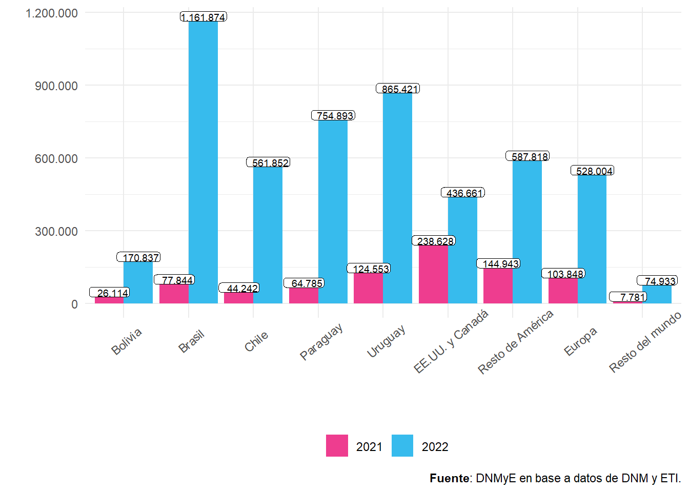

Capítulo 2 Turismo Internacional en Argentina
2.1 Introducción
En el presente capítulo se analizan los distintos aspectos relacionados al turismo receptivo y emisivo de la Argentina. Para ello, se toman como base las siguientes fuentes que abarcan los distintos aspectos de la actividad turística:
- Estimaciones de la cantidad de viajes de turistas y excursionistas1 elaboradas por la DNMyE en base a datos de la Dirección Nacional de Migraciones (DNM) de la totalidad de los pasos fronterizos del país y de la Encuesta de Turismo Internacional (ETI). Es decir, del flujo de viajes de turistas y excursionistas no residentes que visitaron el país y residentes que viajaron al exterior, por todos los medios de transporte (aéreo, fluvial/marítimo y terrestre).
Datos de la Dirección Nacional de Estadísticas del Sector Externo y Cuentas Internacionales (DNESEyCI) del INDEC, que dicha dirección elabora para la construcción de la cuenta viajes del balance de pagos, con información sobre el gasto turístico2 emisivo y receptivo por todos los medios de transporte de ingreso y egreso del país, es decir los pasos terrestres, fluviales, marítimos y aéreos.
La Encuesta de Turismo Internacional (ETI) que estudia la evolución y las características de los turistas residentes y no residentes (turismo emisivo y receptivo) por el Aeropuerto internacional de Ezeiza, el Aeroparque Jorge Newbery, el Aeropuerto Internacional Pajas Blancas de Córdoba, Aeropuerto Internacional de Mendoza, el Puerto de Buenos Aires y el Paso Internacional Cristo Redentor.
En la primera sección, inicialmente, se presentarán los indicadores más importantes acerca de la evolución general de los viajes de turistas residentes y no residentes en base a los datos de la DNMyE. Luego, se mostrará información sobre el gasto y estadía con datos de la DNESEyCI del INDEC.
En el segundo apartado, se realizará un análisis más exhaustivo del perfil de los turistas internacionales que ingresan y egresan por los aeropuertos internacionales de Ezeiza, Córdoba, Mendoza, Aeroparque Jorge Newbery, el Puerto de Buenos Aires y el paso Cristo Redentor, en base a datos de la ETI.
En todo el capítulo, se presentan los datos desagregados por país de residencia para el receptivo y por país de destino para el emisivo, agrupados de la siguiente forma: cada uno de los países limítrofes (Bolivia, Brasil, Chile, Paraguay, Uruguay), EE.UU.y Canadá, Resto de América, Europa y Resto del mundo.
A la hora de analizar la información de ambas secciones, es relevante considerar que el turismo internacional en 2021 aún estuvo afectado por la pandemia de la COVID-19; por lo que la información presentada referida tanto al volumen de turistas (y sus gastos), como el perfil de los mismos puede llegar a presentar diferencias con respecto al resto de los años.
2.2 Turismo Internacional en Argentina por todos los medios de transporte de Ingreso y Egreso del País
2.2.1 Turismo Receptivo
El total de viajes de turistas no residentes en 2022 fue de 388.972.600%, con un aumento interanual de un 1.207,6%. En comparación con 2019 (prepandemia), cayó un 47,4%.
| Año | Viajes de visitantes no residentes | Variación interanual (%) | Viajes de turistas no residentes | Variación interanual (%) | Viajes de excursionistas no residentes | Variación interanual (%) |
|---|---|---|---|---|---|---|
| 2012 | 8.885.268 | /// | 6.461.907 | /// | 2.423.361 | /// |
| 2013 | 9.086.046 | 2,3% | 6.510.434 | 0,8% | 2.575.612 | 6,3% |
| 2014 | 10.699.930 | 17,8% | 7.165.360 | 10,1% | 3.534.570 | 37,2% |
| 2015 | 10.763.989 | 0,6% | 6.815.761 | −4,9% | 3.948.228 | 11,7% |
| 2016 | 9.986.323 | −7,2% | 6.668.289 | −2,2% | 3.318.034 | −16,0% |
| 2017 | 9.963.899 | −0,2% | 6.711.328 | 0,6% | 3.252.571 | −2,0% |
| 2018 | 10.393.330 | 4,3% | 6.941.828 | 3,4% | 3.451.502 | 6,1% |
| 2019 | 11.131.530 | 7,1% | 7.399.050 | 6,6% | 3.732.480 | 8,1% |
| 2020 | 3.096.174 | −72,2% | 2.089.549 | −71,8% | 1.006.626 | −73,0% |
| 2021 | 459.983 | −85,1% | 297.478 | −85,8% | 162.505 | −83,9% |
| 2022 | 7.502.981 | 1.531,1% | 3.889.726 | 1.207,6% | 3.613.255 | 2.123,5% |
| Fuente: DNMyE en base a datos de DNM y ETI. | ||||||
La serie histórica de viajes de turistas no residentes muestra una tendencia general ascendente, aunque con algunos momentos de caída. En el año 2019, se encontraba en su punto más alto, con 7,4 millones de viajes de turistas. Luego de la caída de 2020 y 2021 por la pandemia, en 2022 se observa una clara recuperación.
El turismo proveniente de países limítrofes siempre ha sido el mayoritario, reflejando la misma tendencia que la serie general. En tanto, los provenientes de países no limítrofes, han tenido momentos de crecimiento y otros de relativo estancamiento, como entre 2007 y 2018, repuntando en 2019.
En el año 2022, el 32,8% de los viajes de turistas fueron desde países no limítrofes, en tanto el 67,2% restante lo hicieron desde países limítrofes.
Figura 2.1: Viajes de turistas no residentes según lugar de residencia por año. Total país. Años 1990-2022.

Figura 2.2: Viajes de turistas no residentes por lugar de residencia. Distribución porcentual. Año 2022.

Brasil fue el principal mercado emisor de turismo hacia Argentina, con 798.687 turistas (20,5%), seguido por Uruguay y Chile con 756.946 y 495.640 y con un 19,5% y 12,7% respectivamente.
Como se observa en el siguiente gráfico, en el año 2022, hubo un alto crecimiento en los viajes de los turistas no residentes desde todos los países.
Figura 2.3: Viajes de turistas no residentes por lugar de residencia por año. Total país. Años 2021-2022.

Al observar la evolución mensual del año 2022 se puede ver una tendencia de recuperación creciente respecto a 2019. Partiendo de un enero con una caída del 80,0% respecto a 2019, al finalizar el año noviembre presenta una variación de -22,1% y diciembre de -40,9%. Este último mes fue bastante atípico, apenas superior a noviembre, probablemente en buena medida debido al desarrollo del Mundial de Fútbol de 2022 en Qatar.
En tanto, la variación interanual, aunque es muy alta en todos los meses, es algo menor en los últimos meses del año, debido a la recuperación iniciada en el último trimestre de 2021.
La recuperación del segundo trimestre se debe principalmente a los viajes de turistas de países limítrofes, los cuales también mostraron un incremento en el tercer trimestre. En tanto, los viajes de turistas de países no limítrofes tienen un importante crecimiento en el cuarto trimestre.
| Mes | Total | Variación interanual (%) | Variación vs. 2019 (%) | Bolivia | Variación interanual (%) | Brasil | Variación interanual (%) | Chile | Variación interanual (%) | EE.UU. y Canadá | Variación interanual (%) | Europa | Variación interanual (%) | Paraguay | Variación interanual (%) | Resto de América | Variación interanual (%) | Resto del mundo | Variación interanual (%) | Uruguay | Variación interanual (%) |
|---|---|---|---|---|---|---|---|---|---|---|---|---|---|---|---|---|---|---|---|---|---|
| Total | 3.889.726 | 1.207,6% | −47,4% | 154.594 | 1.494,9% | 798.687 | 1.670,5% | 495.640 | 1.596,2% | 349.613 | 669,3% | 488.353 | 567,9% | 407.381 | 1.837,2% | 360.575 | 929,1% | 77.938 | 1.154,1% | 756.946 | 2.221,4% |
| Enero | 176.499 | 674,3% | −80,0% | 6.121 | 607,6% | 34.229 | 1.526,9% | 17.478 | 666,3% | 29.470 | 714,3% | 40.638 | 365,9% | 15.662 | 1.573,3% | 18.978 | 430,4% | 3.993 | 1.379,5% | 9.930 | 2.262,5% |
| Febrero | 150.584 | 1.089,0% | −79,2% | 4.563 | 1.348,6% | 23.068 | 2.537,0% | 19.266 | 1.257,0% | 19.524 | 1.039,1% | 34.856 | 614,1% | 18.182 | 3.712,9% | 14.029 | 645,4% | 4.727 | 2.029,4% | 12.368 | 1.306,2% |
| Marzo | 211.964 | 1.384,2% | −66,9% | 6.809 | 2.172,0% | 40.713 | 3.541,7% | 18.910 | 1.276,2% | 27.804 | 1.150,7% | 44.900 | 738,4% | 20.915 | 3.941,3% | 21.862 | 793,2% | 5.167 | 1.676,6% | 24.884 | 3.699,1% |
| Abril | 302.040 | 2.708,9% | −48,1% | 9.005 | 5.198,5% | 58.930 | 7.565,2% | 24.754 | 8.262,9% | 24.924 | 1.058,9% | 43.507 | 855,2% | 35.571 | 12.081,9% | 26.139 | 1.550,6% | 5.282 | 1.615,2% | 73.927 | 11.647,4% |
| Mayo | 276.318 | 3.559,4% | −40,5% | 11.441 | 3.858,8% | 57.805 | 7.303,8% | 39.392 | 12.205,2% | 19.542 | 1.780,8% | 27.741 | 973,3% | 33.926 | 8.769,5% | 26.362 | 1.890,0% | 4.091 | 1.955,8% | 56.018 | 8.775,9% |
| Junio | 249.341 | 3.972,2% | −42,2% | 10.270 | 9.331,8% | 66.783 | 19.724,5% | 32.201 | 16.321,0% | 19.924 | 1.749,0% | 20.139 | 670,8% | 28.216 | 11.575,8% | 22.378 | 2.661,7% | 4.158 | 2.021,4% | 45.271 | 8.241,6% |
| Julio | 388.871 | 7.922,9% | −36,0% | 17.558 | 23.627,1% | 103.098 | 23.061,8% | 39.545 | 24.451,2% | 22.918 | 2.565,4% | 22.502 | 1.357,4% | 46.892 | 23.268,1% | 27.472 | 4.021,9% | 3.684 | 1.969,6% | 105.203 | 14.554,1% |
| Agosto | 356.199 | 8.151,1% | −28,9% | 13.678 | 24.325,6% | 86.620 | 27.880,7% | 38.319 | 26.344,9% | 24.098 | 2.900,9% | 33.089 | 2.270,4% | 39.610 | 24.811,9% | 31.321 | 4.663,8% | 4.531 | 2.518,8% | 84.932 | 13.641,5% |
| Septiembre | 386.039 | 8.023,7% | −33,4% | 15.445 | 12.879,0% | 87.162 | 29.394,7% | 52.879 | 26.288,4% | 20.262 | 3.189,3% | 28.011 | 1.557,5% | 37.943 | 18.196,8% | 34.232 | 5.405,1% | 5.065 | 3.045,7% | 105.040 | 12.391,8% |
| Octubre | 424.661 | 1.940,0% | −22,4% | 17.777 | 2.117,1% | 88.797 | 2.782,3% | 62.460 | 2.687,9% | 26.866 | 1.043,6% | 42.736 | 773,6% | 44.524 | 4.255,9% | 41.219 | 2.236,8% | 8.037 | 1.694,0% | 92.244 | 2.086,6% |
| Noviembre | 483.243 | 557,2% | −22,1% | 18.744 | 704,9% | 78.410 | 414,6% | 76.139 | 680,8% | 46.423 | 371,9% | 74.578 | 452,9% | 41.415 | 703,1% | 49.046 | 560,1% | 11.882 | 837,8% | 86.605 | 858,7% |
| Diciembre | 483.967 | 320,7% | −40,9% | 23.182 | 443,5% | 73.071 | 269,8% | 74.296 | 585,7% | 67.857 | 254,2% | 75.655 | 253,5% | 44.525 | 289,3% | 47.537 | 287,4% | 17.321 | 592,3% | 60.523 | 351,0% |
| Fuente: DNMyE en base a datos de DNM y ETI. | |||||||||||||||||||||
La recuperación respecto a 2019 de Uruguay ha sido la más importante, con una variación de sólo -5,3%, seguida por EE.UU y Canadá y Brasil, con -34,4% y -45,8% respectivamente.
En cuanto a los medios de transporte, no hay grandes diferencias, aunque los aéreos han sido los que más se han recuperado frente a 2019, seguidos de los medios fluviales y marítimos y por último los terrestres. Lo inverso sucede al observar la variación interanual, donde los viajes por medios terrestres tienen un crecimiento mucho mayor. Sin embargo, los viajes por vía aérea, al igual que en 2021, han sido los mayoritarios.
| País de residencia | Total | Variación vs. 2019 (%) | Aéreo | Fluvial/marítimo | Terrestre | |||||||||
|---|---|---|---|---|---|---|---|---|---|---|---|---|---|---|
| Turistas | Variación interanual (%) | Variación vs. 2019 (%) | Participación en el total (%) | Turistas | Variación interanual (%) | Variación vs. 2019 (%) | Participación en el total (%) | Turistas | Variación interanual (%) | Variación vs. 2019 (%) | Participación en el total (%) | |||
| Total | 3.889.726 | −47,4% | 1.691.076 | 700,9% | −44,8% | 43,5% | 566.374 | 1.898,1% | −47,9% | 14,6% | 1.632.276 | 2.714,7% | −49,7% | 42,0% |
| Bolivia | 154.594 | −71,9% | 42.278 | 589,8% | −39,0% | 27,3% | 17.448 | 10.539,0% | −82,5% | 11,3% | 94.868 | 2.690,5% | −75,1% | 61,4% |
| Brasil | 798.687 | −45,8% | 432.618 | 1.694,3% | −49,1% | 54,2% | 80.130 | 3.892,5% | −59,0% | 10,0% | 285.939 | 1.405,6% | −33,3% | 35,8% |
| Chile | 495.640 | −56,6% | 203.938 | 756,6% | −44,0% | 41,1% | 7.135 | 2.254,8% | −51,9% | 1,4% | 284.567 | 5.470,2% | −62,7% | 57,4% |
| EE.UU. y Canadá | 349.613 | −34,4% | 281.540 | 555,7% | −20,9% | 80,5% | 34.256 | 1.574,3% | −68,9% | 9,8% | 33.817 | 7.157,9% | −49,8% | 9,7% |
| Europa | 488.353 | −52,7% | 349.352 | 404,0% | −42,1% | 71,5% | 38.520 | 1.691,6% | −69,3% | 7,9% | 100.481 | 5.955,4% | −66,9% | 20,6% |
| Paraguay | 407.381 | −52,2% | 35.176 | 715,9% | −60,5% | 8,6% | 32.944 | 21.717,2% | −61,4% | 8,1% | 339.261 | 1.947,9% | −49,9% | 83,3% |
| Resto de América | 360.575 | −48,0% | 270.279 | 734,3% | −43,0% | 75,0% | 41.011 | 3.114,0% | −40,2% | 11,4% | 49.285 | 3.515,5% | −67,5% | 13,7% |
| Resto del mundo | 77.938 | −75,9% | 49.408 | 852,3% | −73,9% | 63,4% | 6.381 | 2.307,9% | −84,1% | 8,2% | 22.149 | 2.808,0% | −76,4% | 28,4% |
| Uruguay | 756.946 | −5,3% | 26.488 | 798,1% | −62,3% | 3,5% | 308.549 | 1.444,1% | −11,3% | 40,8% | 421.909 | 4.261,0% | 10,6% | 55,7% |
| Fuente: DNMyE en base a datos de DNM y ETI. | ||||||||||||||
En cuanto al gasto turístico de 2022, el de los turistas no residentes tuvo un aumento interanual de un 819,3%, pasando a ser de US$ 3.206,1 millones3. Por su parte, el gasto de los excursionistas fue de US$ 106,2 millones (1.976,1% i.a.), mientras que el gasto en pasajes4 alcanzó los US$ 220,0 millones (466,7% i.a).
Así, los ingresos económicos totales por turismo receptivo (que incluye al gasto de los turistas no residentes, los excursionistas no residentes y el gasto en pasajes) en el año 2022 alcanzó los US$ 3.532,3 millones, implicando un aumento de 799,5% respecto al año anterior.
En comparación con 2019, el gasto de los turistas no residentes cayó un 35,8%, en tanto el gasto total por turismo receptivo lo hizo en un 36,3%.
| Año | Gasto turístico total | Variación interanual (%) | Gasto de turistas no residentes | Variación interanual (%) | Gasto de excursionistas no residentes | Variación interanual (%) | Gasto en pasajes | Variación interanual (%) |
|---|---|---|---|---|---|---|---|---|
| 2012 | 6.695,8 | /// | 5.737,8 | /// | 307,4 | /// | 650,6 | /// |
| 2013 | 6.127,9 | −8,5% | 5.165,4 | −10,0% | 288,0 | −6,3% | 674,4 | 3,7% |
| 2014 | 6.607,5 | 7,8% | 5.540,3 | 7,3% | 382,5 | 32,8% | 684,6 | 1,5% |
| 2015 | 6.150,9 | −6,9% | 5.256,8 | −5,1% | 379,8 | −0,7% | 514,3 | −24,9% |
| 2016 | 5.345,4 | −13,1% | 4.589,5 | −12,7% | 257,0 | −32,3% | 498,9 | −3,0% |
| 2017 | 5.686,0 | 6,4% | 4.979,0 | 8,5% | 247,0 | −3,9% | 459,9 | −7,8% |
| 2018 | 5.840,9 | 2,7% | 5.120,3 | 2,8% | 284,3 | 15,1% | 436,3 | −5,1% |
| 2019 | 5.542,6 | −5,1% | 4.995,8 | −2,4% | 134,0 | −52,9% | 412,8 | −5,4% |
| 2020 | 1.746,7 | −68,5% | 1.654,2 | −66,9% | 26,3 | −80,4% | 66,3 | −83,9% |
| 2021 | 392,7 | −77,5% | 348,8 | −78,9% | 5,1 | −80,5% | 38,8 | −41,4% |
| 2022 | 3.532,3 | 799,5% | 3.206,1 | 819,3% | 106,2 | 1.976,1% | 220,0 | 466,7% |
| Fuente: DNMyE en base a datos de INDEC. | ||||||||
El siguiente gráfico muestra un ascenso del gasto turístico hasta 1998, donde comienza un incipiente descenso, hasta la abrupta caída en 2002. Al año siguiente presenta una línea de ascenso hasta 2011, solo interrumpida por la caída del año 2009.
En 2022, se observa un fuerte crecimiento posterior a la caída por la pandemia en 2020 y 2021, tanto debido al gasto de turistas de países limítrofes como no limítrofes.
Desde el año 2003, el gasto turístico estuvo mayormente explicado por el de los turistas extranjeros residentes en países no limítrofes, ya que éste representaba más del 50% del gasto total en todos los años, diferenciándose de la década del noventa, donde tenían una participación un poco menor a los residentes en países limítrofes. Esta preponderancia prevaleció históricamente, aunque fue menor entre 2012 y 2015, y muy escasa en 2014.
En tanto, desde 2020, el gasto de turistas de países limítrofes y no limítrofes fue más similar.
Figura 2.4: Gasto de turistas no residentes según lugar de residencia por año. Total país. Años 1990-2022.

El ascenso del gasto turístico del año 2022 se observa en todos los países. Los turistas de Brasil fueron los que tuvieron un gasto mayor (US$ 657,4 millones), seguidos de Europa con un gasto de US$ 587,4 millones y Resto de América, con US$ 459,7 millones.
Figura 2.5: Gasto en US$ de turistas no residentes por lugar de residencia. Distribución porcentual. Año 2022.

| País de residencia | Gasto Total | Variación interanual (%) | Variación vs. 2019 (%) |
|---|---|---|---|
| Bolivia | 127,6 | 1.372,9% | −43,1% |
| Brasil | 657,4 | 1.430,0% | −21,4% |
| Chile | 265,9 | 930,1% | −37,6% |
| EE.UU. y Canadá | 434,7 | 599,9% | −31,0% |
| Europa | 587,4 | 474,9% | −51,3% |
| Paraguay | 282,8 | 1.395,5% | −25,0% |
| Resto de América | 459,7 | 780,9% | −33,4% |
| Resto del mundo | 109,0 | 1.035,2% | −74,4% |
| Uruguay | 281,6 | 969,3% | 55,3% |
| Fuente: DNMyE en base a datos de INDEC. | |||
Durante el año 2022, el gasto promedio por viaje de turista fue de US$ 824,2 millones, con una variación interanual de -29,7% y de 22,1% respecto a 2019.
El gasto promedio por viaje de turista fue mayor en los residentes en Resto del mundo, Resto de América y Estados Unidos y Canadá.
| Año | Total | Variación interanual (%) | Bolivia | Variación interanual (%) | Brasil | Variación interanual (%) | Chile | Variación interanual (%) | Paraguay | Variación interanual (%) | Uruguay | Variación interanual (%) | EE.UU. y Canadá | Variación interanual (%) | Resto de América | Variación interanual (%) | Europa | Variación interanual (%) | Resto del mundo | Variación interanual (%) |
|---|---|---|---|---|---|---|---|---|---|---|---|---|---|---|---|---|---|---|---|---|
| 2012 | 887,9 | /// | 493,3 | /// | 987,8 | /// | 556,0 | /// | 372,9 | /// | 254,2 | /// | 1.580,2 | /// | 1.278,0 | /// | 1.441,5 | /// | 1.644,3 | /// |
| 2013 | 793,4 | −10,6% | 523,2 | 6,1% | 800,4 | −19,0% | 521,2 | −6,3% | 452,6 | 21,4% | 269,1 | 5,8% | 1.495,3 | −5,4% | 1.233,4 | −3,5% | 1.271,1 | −11,8% | 1.541,1 | −6,3% |
| 2014 | 773,2 | −2,5% | 599,4 | 14,6% | 791,8 | −1,1% | 519,4 | −0,4% | 554,5 | 22,5% | 280,1 | 4,1% | 1.516,0 | 1,4% | 1.184,7 | −3,9% | 1.151,3 | −9,4% | 1.715,8 | 11,3% |
| 2015 | 771,3 | −0,3% | 567,9 | −5,3% | 704,1 | −11,1% | 491,4 | −5,4% | 562,8 | 1,5% | 285,6 | 2,0% | 1.431,6 | −5,6% | 1.173,1 | −1,0% | 1.211,9 | 5,3% | 1.733,5 | 1,0% |
| 2016 | 688,3 | −10,8% | 412,0 | −27,4% | 590,4 | −16,1% | 405,0 | −17,6% | 456,1 | −68,1% | 241,6 | −86,1% | 1.205,3 | 114,1% | 1.133,6 | −3,4% | 1.191,1 | 317,1% | 1.304,5 | 7,6% |
| 2017 | 741,9 | 7,8% | 421,6 | 2,3% | 640,6 | 8,5% | 402,5 | −0,6% | 482,9 | 5,9% | 256,1 | 6,0% | 1.380,9 | 14,6% | 1.271,0 | 12,1% | 1.291,3 | 8,4% | 1.242,4 | −4,8% |
| 2018 | 737,6 | −0,6% | 387,2 | −8,2% | 610,9 | −4,6% | 431,1 | 7,1% | 426,4 | −11,7% | 224,9 | −12,2% | 1.358,7 | −1,6% | 1.176,2 | −7,5% | 1.359,0 | 5,2% | 1.311,7 | 5,6% |
| 2019 | 675,2 | −8,5% | 408,1 | 5,4% | 567,2 | −7,1% | 373,2 | −13,4% | 442,9 | 3,9% | 226,8 | 0,8% | 1.180,7 | −13,1% | 994,9 | −15,4% | 1.168,1 | −14,1% | 1.315,8 | 0,3% |
| 2020 | 791,6 | 17,2% | 708,1 | 73,5% | 739,6 | 30,4% | 370,0 | −0,8% | 584,5 | 32,0% | 906,6 | 299,8% | 857,6 | −27,4% | 1.042,4 | 4,8% | 1.180,3 | 1,0% | 1.159,4 | −11,9% |
| 2021 | 1.172,4 | 48,1% | 894,1 | 26,3% | 952,5 | 28,8% | 883,4 | 138,7% | 899,2 | 53,9% | 807,8 | −10,9% | 1.366,7 | 59,4% | 1.489,4 | 42,9% | 1.397,3 | 18,4% | 1.544,4 | 33,2% |
| 2022 | 824,2 | −29,7% | 825,7 | −7,7% | 823,1 | −13,6% | 536,5 | −39,3% | 694,2 | −22,8% | 372,1 | −53,9% | 1.243,4 | −9,0% | 1.274,8 | −14,4% | 1.202,8 | −13,9% | 1.398,0 | −9,5% |
| Fuente: DNMyE en base a datos de INDEC. | ||||||||||||||||||||
Este descenso del gasto por viaje se explica por la caída en la estadía promedio del viaje, ya que el gasto promedio diario aumentó. Los tres fenómenos se dan en los turistas de todos los países.
El gasto promedio diario tuvo un aumento interanual de 80,2%. Respecto a 2019, tuvo una variación de 2,5% .
El gasto promedio diario fue mayor en los turistas provenientes de Brasil, EE.UU. y Canadá, seguidos de Resto del Mundo.
| Año | Total | Variación interanual (%) | Bolivia | Variación interanual (%) | Brasil | Variación interanual (%) | Chile | Variación interanual (%) | Paraguay | Variación interanual (%) | Uruguay | Variación interanual (%) | EE.UU. y Canadá | Variación interanual (%) | Resto de América | Variación interanual (%) | Europa | Variación interanual (%) | Resto del mundo | Variación interanual (%) |
|---|---|---|---|---|---|---|---|---|---|---|---|---|---|---|---|---|---|---|---|---|
| 2011 | 95,6 | /// | 54,0 | /// | 188,7 | /// | 87,1 | /// | 32,8 | /// | 71,5 | /// | 114,2 | /// | 91,0 | /// | 91,3 | /// | 121,4 | /// |
| 2012 | 87,3 | −8,7% | 51,9 | −3,9% | 173,8 | −7,9% | 86,2 | −1,0% | 31,3 | −4,5% | 70,0 | −2,1% | 107,2 | −6,2% | 76,5 | −15,8% | 77,4 | −15,2% | 147,5 | 21,5% |
| 2013 | 86,7 | −0,6% | 46,6 | −10,2% | 151,0 | −13,1% | 86,8 | 0,6% | 51,3 | 63,9% | 88,6 | 26,5% | 108,2 | 1,0% | 81,9 | 7,0% | 74,3 | −4,0% | 125,5 | −14,9% |
| 2014 | 85,0 | −2,0% | 55,7 | 19,4% | 145,7 | −3,5% | 88,2 | 1,6% | 48,2 | −6,1% | 84,8 | −4,3% | 100,8 | −6,9% | 88,6 | 8,2% | 72,0 | −3,1% | 118,6 | −5,5% |
| 2015 | 81,1 | −4,5% | 56,7 | 1,8% | 124,9 | −14,3% | 84,8 | −3,8% | 46,1 | −4,4% | 78,9 | −7,0% | 113,8 | 12,9% | 75,2 | −15,2% | 75,3 | 4,5% | 135,8 | 14,5% |
| 2016 | 66,0 | −18,7% | 36,7 | −35,2% | 104,9 | −16,0% | 67,0 | −21,0% | 32,6 | −29,3% | 64,3 | −18,5% | 94,5 | −17,0% | 66,7 | −11,3% | 69,4 | −7,8% | 111,0 | −18,3% |
| 2017 | 71,8 | 8,8% | 37,0 | 0,7% | 113,8 | 8,5% | 67,5 | 0,7% | 34,8 | 6,8% | 69,5 | 8,0% | 105,5 | 11,7% | 77,0 | 15,5% | 78,8 | 13,6% | 95,0 | −14,4% |
| 2018 | 67,3 | −6,2% | 33,0 | −10,8% | 93,0 | −18,3% | 65,9 | −2,4% | 28,5 | −18,0% | 57,8 | −16,7% | 103,8 | −1,7% | 65,7 | −14,7% | 81,0 | 2,7% | 99,5 | 4,7% |
| 2019 | 64,5 | −4,2% | 35,5 | 7,6% | 90,7 | −2,4% | 58,5 | −11,2% | 30,1 | 5,5% | 58,1 | 0,5% | 97,0 | −6,6% | 61,2 | −6,9% | 72,6 | −10,3% | 92,5 | −7,1% |
| 2020 | 48,5 | −24,7% | 33,6 | −5,3% | 59,1 | −34,9% | 45,4 | −22,3% | 26,2 | −12,9% | 67,8 | 16,6% | 70,1 | −27,7% | 36,7 | −40,0% | 56,9 | −21,6% | 65,4 | −29,3% |
| 2021 | 36,7 | −24,4% | 26,3 | −21,9% | 41,2 | −30,2% | 37,9 | −16,6% | 28,8 | 10,0% | 41,1 | −39,4% | 48,7 | −30,5% | 31,4 | −14,4% | 35,1 | −38,3% | 30,9 | −52,7% |
| 2022 | 66,1 | 80,2% | 46,3 | 76,5% | 94,7 | 129,5% | 68,7 | 81,3% | 43,6 | 51,1% | 61,6 | 50,0% | 85,0 | 74,7% | 71,1 | 126,2% | 54,3 | 54,6% | 74,0 | 139,3% |
| Fuente: DNMyE en base a datos de INDEC. | ||||||||||||||||||||
La estadía promedio de los viajes de turistas no residentes en el año 2022 fue de 12,5 días, con una variación interanual de -61,0%. Cabe señalar que esta caída se debe a que 2021 fue un año atípico en relación a la estadía promedio debido a las medidas establecidas en función de la pandemia. Los no residentes que tenían permitido el ingreso eran los de nacionalidad argentina o quienes tenían familiares directos en el país, lo cual tuvo como consecuencia un cambio en el perfil del turista no residente.
En tanto, se observa un incremento de 19,1% al comparar con la estadía promedio del año 2019, la cual venía en línea con la tendencia histórica.
Los turistas que residen en Europa, Resto del mundo y Resto de América han sido los que han tenido estadías más prolongadas en el país.
| Año | Total | Bolivia | Brasil | Chile | Paraguay | Uruguay | EE.UU. y Canadá | Resto de América | Europa | Resto del mundo |
|---|---|---|---|---|---|---|---|---|---|---|
| 2011 | 9,9 | 9,7 | 5,4 | 6,1 | 12,2 | 3,8 | 15,7 | 14,5 | 17,4 | 14,1 |
| 2012 | 10,2 | 9,5 | 5,7 | 6,4 | 11,9 | 3,6 | 14,7 | 16,7 | 18,6 | 11,1 |
| 2013 | 9,2 | 11,2 | 5,3 | 6,0 | 8,8 | 3,0 | 13,8 | 15,1 | 17,1 | 12,3 |
| 2014 | 9,1 | 10,8 | 5,4 | 5,9 | 11,5 | 3,3 | 15,0 | 13,4 | 16,0 | 14,5 |
| 2015 | 9,5 | 10,0 | 5,6 | 5,8 | 12,2 | 3,6 | 12,6 | 15,6 | 16,1 | 12,8 |
| 2016 | 10,4 | 11,2 | 5,6 | 6,0 | 14,0 | 3,8 | 12,8 | 17,0 | 17,2 | 11,8 |
| 2017 | 10,3 | 11,4 | 5,6 | 6,0 | 13,9 | 3,7 | 13,1 | 16,5 | 16,4 | 13,1 |
| 2018 | 11,0 | 11,7 | 6,6 | 6,5 | 15,0 | 3,9 | 13,1 | 17,9 | 16,8 | 13,2 |
| 2019 | 10,5 | 11,5 | 6,3 | 6,4 | 14,7 | 3,9 | 12,2 | 16,3 | 16,1 | 14,2 |
| 2020 | 16,3 | 21,1 | 12,5 | 8,1 | 22,3 | 13,4 | 12,2 | 28,4 | 20,7 | 17,7 |
| 2021 | 32,0 | 34,1 | 23,1 | 23,3 | 31,2 | 19,7 | 28,1 | 47,4 | 39,8 | 50,0 |
| 2022 | 12,5 | 17,8 | 8,7 | 7,8 | 15,9 | 6,0 | 14,6 | 17,9 | 22,2 | 18,9 |
| Fuente: DNMyE en base a datos de INDEC. | ||||||||||
2.2.2 Turismo Emisivo
El total de viajes de turistas residentes en 2022 fue de 514.229.300%, con un aumento interanual de un 517,5%. En comparación con 2019, cayó un 43,6%.
| Año | Visitantes residentes | Variación interanual (%) | Turistas residentes | Variación interanual (%) | Excursionistas residentes | Variación interanual (%) |
|---|---|---|---|---|---|---|
| 2012 | 10.112.294 | /// | 6.510.048 | /// | 3.602.245 | /// |
| 2013 | 10.195.700 | 0,8% | 6.748.522 | 3,7% | 3.447.178 | −4,3% |
| 2014 | 10.649.522 | 4,5% | 6.565.225 | −2,7% | 4.084.297 | 18,5% |
| 2015 | 14.114.987 | 32,5% | 7.859.497 | 19,7% | 6.255.491 | 53,2% |
| 2016 | 18.644.929 | 32,1% | 10.416.931 | 32,5% | 8.227.998 | 31,5% |
| 2017 | 21.582.600 | 15,8% | 12.213.018 | 17,2% | 9.369.583 | 13,9% |
| 2018 | 18.410.936 | −14,7% | 11.130.183 | −8,9% | 7.280.753 | −22,3% |
| 2019 | 15.351.341 | −16,6% | 9.113.564 | −18,1% | 6.237.777 | −14,3% |
| 2020 | 4.087.301 | −73,4% | 2.841.123 | −68,8% | 1.246.179 | −80,0% |
| 2021 | 1.074.116 | −73,7% | 832.739 | −70,7% | 241.377 | −80,6% |
| 2022 | 7.891.115 | 634,7% | 5.142.293 | 517,5% | 2.748.822 | 1.038,8% |
| Fuente: DNMyE en base a datos de DNM y ETI. | ||||||
La serie de viajes de turistas residentes muestra una línea general ascendente, con una caída en el año 2002 y un crecimiento sostenido desde entonces, y principalmente entre 2014 y 2017, cuando llegó a 12,2 millones de viajes de turistas, descendiendo posteriormente. Los países limítrofes son los destinos mayoritarios en toda la serie, a excepción del año 2021. En el año 2022 los viajes hacia países limítrofes vuelven a traccionar el crecimiento.
Figura 2.6: Viajes de turistas residentes por país de destino principal por año. Total país. Años 1990-2022.

En el año 2022, Brasil fue el destino principal del turismo emisivo, con
1.161.874 turistas,
(22,6%) seguido por Uruguay y Paraguay, con 865.421 y 754.893, con
16,8% y
14,7% respectivamente.
Figura 2.7: Viajes de turistas residentes por país de destino principal. Distribución porcentual. Año 2022.

El gran incremento del año 2022 respecto al año anterior se aprecia en los viajes a todos los destinos.
Figura 2.8: Viajes de turistas residentes por país de destino principal por año. Total país. Años 2021-2022.
Al observar la evolución mensual del año 2022 se puede ver una tendencia general de recuperación creciente respecto a 2019. Partiendo de un enero con una caída del 68,1% respecto a 2019, en octubre la variación es del -12,0%, y los dos últimos meses del año del -22,0% y -24,5%.
En tanto, la variación interanual, aunque es muy alta en todos los meses, es algo menor en los últimos meses del año, debido a la recuperación iniciada en el último trimestre de 2021.
Casi todos los meses, Brasil fue el destino principal, siendo apenas superado en junio y agosto, por los viajes a Paraguay y Europa respectivamente, y -en mayor medida- por los viajes a Uruguay en diciembre.
| Mes | Total | Variación interanual (%) | Variación vs. 2019 (%) | Bolivia | Variación interanual (%) | Brasil | Variación interanual (%) | Chile | Variación interanual (%) | EE.UU. y Canadá | Variación interanual (%) | Europa | Variación interanual (%) | Paraguay | Variación interanual (%) | Resto de América | Variación interanual (%) | Resto del mundo | Variación interanual (%) | Uruguay | Variación interanual (%) |
|---|---|---|---|---|---|---|---|---|---|---|---|---|---|---|---|---|---|---|---|---|---|
| Total | 5.142.293 | 517,5% | −43,6% | 170.837 | 554,2% | 1.161.874 | 1.392,6% | 561.852 | 1.169,9% | 436.661 | 83,0% | 528.004 | 408,4% | 754.893 | 1.065,2% | 587.818 | 305,5% | 74.933 | 863,1% | 865.421 | 594,8% |
| Enero | 417.971 | 548,1% | −68,1% | 7.359 | 366,3% | 118.246 | 895,3% | 14.527 | 123,9% | 24.527 | 57,7% | 20.410 | 355,5% | 90.140 | 3.703,1% | 39.089 | 123,0% | 3.215 | 126,4% | 100.458 | 3.043,3% |
| Febrero | 468.231 | 632,6% | −60,8% | 9.215 | 201,7% | 185.154 | 2.039,5% | 16.280 | 181,7% | 29.332 | 99,9% | 17.304 | 308,2% | 62.507 | 1.987,7% | 49.901 | 156,9% | 3.548 | 446,7% | 94.991 | 2.033,2% |
| Marzo | 381.949 | 540,3% | −58,9% | 9.555 | 238,7% | 119.426 | 1.452,8% | 21.454 | 385,6% | 35.814 | 251,6% | 25.749 | 631,3% | 46.828 | 842,0% | 48.330 | 139,7% | 2.321 | 311,5% | 72.473 | 1.264,8% |
| Abril | 371.451 | 1.094,4% | −47,5% | 6.961 | 285,2% | 94.685 | 6.693,3% | 24.697 | 1.623,2% | 30.930 | 172,8% | 28.936 | 845,0% | 64.394 | 2.982,5% | 49.253 | 589,7% | 3.336 | 1.934,2% | 68.258 | 2.453,6% |
| Mayo | 362.644 | 993,3% | −38,5% | 10.376 | 588,5% | 64.933 | 4.852,8% | 46.652 | 3.180,8% | 38.953 | 161,6% | 40.603 | 1.269,0% | 58.252 | 3.610,4% | 52.166 | 732,8% | 4.375 | 4.707,8% | 46.334 | 1.372,1% |
| Junio | 360.223 | 774,4% | −39,6% | 11.660 | 516,9% | 53.657 | 6.541,6% | 40.504 | 3.428,3% | 39.484 | 86,6% | 52.496 | 1.034,8% | 53.677 | 3.556,6% | 53.429 | 815,4% | 5.339 | 5.403,9% | 49.977 | 1.101,0% |
| Julio | 469.072 | 1.477,4% | −36,6% | 21.182 | 2.442,9% | 107.203 | 19.181,1% | 40.557 | 11.724,2% | 38.328 | 156,6% | 55.621 | 1.186,9% | 84.497 | 5.922,6% | 53.836 | 1.811,8% | 5.031 | 125.686,6% | 62.817 | 1.289,1% |
| Agosto | 424.828 | 822,2% | −35,0% | 21.950 | 1.471,2% | 70.768 | 6.777,3% | 42.968 | 3.075,8% | 43.776 | 125,6% | 71.075 | 520,1% | 59.376 | 5.001,1% | 56.444 | 1.128,4% | 5.365 | 11.562,9% | 53.106 | 844,6% |
| Septiembre | 441.005 | 713,7% | −26,2% | 21.188 | 1.141,3% | 76.729 | 5.401,3% | 61.644 | 3.412,7% | 40.674 | 76,2% | 74.416 | 417,8% | 54.559 | 4.937,6% | 45.918 | 774,8% | 6.913 | 49.277,2% | 58.963 | 964,7% |
| Octubre | 536.811 | 526,6% | −12,0% | 16.249 | 842,4% | 104.807 | 1.522,6% | 92.366 | 3.179,5% | 48.960 | 46,8% | 65.220 | 249,9% | 66.117 | 1.433,2% | 51.085 | 607,6% | 6.571 | 510,7% | 85.436 | 747,8% |
| Noviembre | 450.308 | 202,0% | −22,0% | 16.565 | 474,7% | 79.829 | 519,5% | 77.525 | 1.259,6% | 40.511 | 10,8% | 49.634 | 171,2% | 55.786 | 231,5% | 49.038 | 127,6% | 8.387 | 429,5% | 73.033 | 122,5% |
| Diciembre | 457.800 | 162,5% | −24,5% | 18.577 | 278,1% | 86.438 | 263,5% | 82.678 | 613,7% | 25.372 | 8,0% | 26.540 | 91,5% | 58.759 | 139,5% | 39.329 | 44,8% | 20.532 | 891,2% | 99.576 | 131,4% |
| Fuente: DNMyE en base a datos de DNM y ETI. | |||||||||||||||||||||
Los viajes hacia Europa, Resto de América y Uruguay han sido los que más se han recuperado, en comparación con anterioridad a la pandemia (2019).
En cuanto a los medios de transporte, los viajes por medios fluviales y marítimos han sido los que tuvieron una recuperación mayor frente a 2019, seguidos por los aéreos. En cambio, al observar la variación interanual, los realizados por medios terrestres tuvieron un crecimiento mucho mayor, igualando casi en términos absolutos a los viajes por vía aérea, los cuales, al igual que en 2021, han sido los principales.
| Destino principal | Total | Variación vs. 2019 (%) | Aéreo | Fluvial/marítimo | Terrestre | |||||||||
|---|---|---|---|---|---|---|---|---|---|---|---|---|---|---|
| Turistas | Variación interanual (%) | Variación vs. 2019 (%) | Participación en el total (%) | Turistas | Variación interanual (%) | Variación vs. 2019 (%) | Participación en el total (%) | Turistas | Variación interanual (%) | Variación vs. 2019 (%) | Participación en el total (%) | |||
| Total | 5.142.293 | −43,6% | 2.333.465 | 265,5% | −40,9% | 45,4% | 535.001 | 498,6% | −36,8% | 10,4% | 2.273.827 | 2.066,5% | −47,3% | 44,2% |
| Bolivia | 170.837 | −64,2% | 20.844 | 17,3% | −35,2% | 12,2% | 12.993 | /// | −83,0% | 7,6% | 137.000 | 1.543,1% | −62,9% | 80,2% |
| Brasil | 1.161.874 | −46,2% | 461.584 | 759,3% | −49,4% | 39,7% | 42.326 | 282.074,7% | −49,4% | 3,6% | 657.964 | 2.628,6% | −43,4% | 56,6% |
| Chile | 561.852 | −54,1% | 148.175 | 327,1% | −42,9% | 26,4% | 425 | 911,9% | −89,8% | 0,1% | 413.252 | 4.245,4% | −57,0% | 73,6% |
| EE.UU. y Canadá | 436.661 | −45,1% | 434.952 | 82,3% | −45,1% | 99,6% | 1.421 | /// | −28,8% | 0,3% | 289 | /// | −83,6% | 0,1% |
| Europa | 528.004 | −29,6% | 526.368 | 406,9% | −29,5% | 99,7% | 1.371 | 137.023,9% | −25,2% | 0,3% | 264 | /// | −78,5% | 0,1% |
| Paraguay | 754.893 | −39,9% | 36.540 | 46,9% | −39,2% | 4,8% | 55.292 | 72.652,9% | −51,1% | 7,3% | 663.061 | 1.564,8% | −38,8% | 87,8% |
| Resto de América | 587.818 | −33,2% | 580.086 | 300,2% | −32,8% | 98,7% | 5.911 | /// | −27,1% | 1,0% | 1.820 | /// | −78,7% | 0,3% |
| Resto del mundo | 74.933 | −61,7% | 74.517 | 857,7% | −61,6% | 99,4% | 229 | /// | −30,8% | 0,3% | 187 | /// | −80,3% | 0,2% |
| Uruguay | 865.421 | −37,0% | 50.399 | 314,7% | −44,4% | 5,8% | 415.032 | 365,1% | −25,6% | 48,0% | 399.990 | 1.626,9% | −44,9% | 46,2% |
| Fuente: DNMyE en base a datos de DNM y ETI. | ||||||||||||||
En cuanto al gasto, el realizado por los turistas residentes tuvo un aumento interanual de un 303,4%, pasando a ser de US$ 5.376,5 millones. Por su parte, el gasto de los excursionistas, fue de US$ 102,6 millones (1.479,9% i.a.), mientras que el gasto en pasajes alcanzó los US$ 1.844,3 millones (262% i.a).
Así, los egresos económicos totales por turismo emisivo (que incluye al gasto de los turistas y excursionistas residentes y el gasto en pasajes) en el año 2022 alcanzaron los US$ 7.323,4 millones, implicando un aumento de 296,1% respecto al año anterior.
En comparación con 2019, el gasto de los turistas residentes cayó un 28,3%, en tanto los egresos totales por turismo emisivo lo hicieron en un 24%.
| Año | Gasto turístico total | Variación interanual (%) | Gasto de turistas residentes | Variación interanual (%) | Gasto de excursionistas residentes | Variación interanual (%) | Gasto en pasajes | Variación interanual (%) |
|---|---|---|---|---|---|---|---|---|
| 2012 | 9.421,4 | /// | 6.767,3 | /// | 304,6 | /// | 2.349,4 | /// |
| 2013 | 9.279,6 | −1,5% | 6.503,0 | −3,9% | 288,0 | −5,4% | 2.488,6 | 5,9% |
| 2014 | 8.470,9 | −8,7% | 6.234,3 | −4,1% | 382,5 | 32,8% | 1.854,1 | −25,5% |
| 2015 | 9.537,7 | 12,6% | 6.792,0 | 8,9% | 379,8 | −0,7% | 2.365,9 | 27,6% |
| 2016 | 11.349,8 | 19,0% | 8.498,7 | 25,1% | 257,0 | −32,3% | 2.594,1 | 9,6% |
| 2017 | 12.996,5 | 14,5% | 9.947,8 | 17,1% | 247,0 | −3,9% | 2.801,7 | 8,0% |
| 2018 | 12.378,0 | −4,8% | 9.680,2 | −2,7% | 284,3 | 15,1% | 2.413,5 | −13,9% |
| 2019 | 9.631,9 | −22,2% | 7.502,4 | −22,5% | 134,0 | −52,9% | 1.995,5 | −17,3% |
| 2020 | 3.262,2 | −66,1% | 2.816,7 | −62,5% | 39,5 | −70,5% | 406,1 | −79,7% |
| 2021 | 1.848,9 | −43,3% | 1.332,9 | −52,7% | 6,5 | −83,6% | 509,5 | 25,5% |
| 2022 | 7.323,4 | 296,1% | 5.376,5 | 303,4% | 102,6 | 1.479,9% | 1.844,3 | 262,0% |
| Fuente: DNMyE en base a datos de INDEC. | ||||||||
Tal como se observa en el siguiente gráfico, el gasto en dólares de turistas residentes en sus viajes al exterior presenta un crecimiento sostenido en la década del noventa, descendiendo en 2001 y 2002 y volviendo a aumentar entre 2003 y 2017. A partir de entonces, comienza a descender. Luego de la gran caída debido a la pandemia en 2020 y 2021, en 2022 comienza a ascender nuevamente.
El gasto según destino limítrofe y no limítrofe ha sido relativamente parejo desde 1990, excepto en 2011 y 2013, donde es más alto en los primeros. En cambio, en 2018 y 2019 la diferencia se agranda en favor de los destinos no limítrofes. Aunque esto cambia en 2020, desde 2021 nuevamente el gasto en países no limítrofes vuelve a ser el más importante.
Figura 2.9: Gasto de turistas residentes según lugar de destino por año. Total país. Años 1990-2022.

En el año 2022, los turistas con destino Europa fueron los que tuvieron un gasto mayor (US$ 1.194,2 millones), seguidos de los que viajaron hacia Brasil y Resto de América.
El crecimiento del gasto turístico emisivo del año 2022 se observa en todos los destinos.
| País de residencia | Gasto Total | Variación interanual (%) | Variación vs. 2019 (%) |
|---|---|---|---|
| Bolivia | 95,3 | 424,9% | −45,9% |
| Brasil | 898,6 | 1.050,7% | −23,8% |
| Chile | 234,1 | 394,1% | −47,0% |
| EE.UU. y Canadá | 843,9 | 94,5% | −41,9% |
| Europa | 1.194,2 | 384,3% | −23,5% |
| Paraguay | 383,3 | 1.163,6% | −30,8% |
| Resto de América | 865,2 | 201,6% | −23,5% |
| Resto del mundo | 209,9 | 326,1% | −61,3% |
| Uruguay | 652,0 | 358,0% | 40,0% |
| Fuente: DNMyE en base a datos de INDEC. | |||
Figura 2.10: Gasto en US$ de turistas residentes por lugar de destino. Distribución porcentual. Año 2022.

El gasto promedio por viaje de turista fue de US$ 1.045,5, con una variación interanual de -34,7%, siendo mayor en los turistas residentes que viajaron a Resto del mundo, Europa y EE.UU. y Canadá.
En relación a 2019 tuvo una variación de 27,0%.
| Año | Total | Variación interanual (%) | Bolivia | Variación interanual (%) | Brasil | Variación interanual (%) | Chile | Variación interanual (%) | Paraguay | Variación interanual (%) | Uruguay | Variación interanual (%) | EE.UU. y Canadá | Variación interanual (%) | Resto de América | Variación interanual (%) | Europa | Variación interanual (%) | Resto del mundo | Variación interanual (%) |
|---|---|---|---|---|---|---|---|---|---|---|---|---|---|---|---|---|---|---|---|---|
| 2012 | 1.039,5 | /// | 856,7 | /// | 1.048,3 | /// | 748,8 | /// | 416,2 | /// | 760,8 | /// | 1.876,8 | /// | 1.508,0 | /// | 2.192,1 | /// | 2.823,3 | /// |
| 2013 | 963,6 | −7,3% | 737,1 | −14,0% | 950,1 | −9,4% | 584,4 | −22,0% | 429,8 | 3,3% | 696,5 | −8,5% | 1.578,8 | −15,9% | 1.487,4 | −1,4% | 2.080,4 | −5,1% | 2.738,8 | −3,0% |
| 2014 | 949,6 | −1,5% | 915,0 | 24,1% | 938,1 | −1,3% | 615,6 | 5,3% | 524,4 | 22,0% | 439,0 | −37,0% | 1.686,4 | 6,8% | 1.514,5 | 1,8% | 1.935,1 | −7,0% | 2.953,4 | 7,8% |
| 2015 | 864,2 | −9,0% | 714,2 | −21,9% | 836,8 | −10,8% | 557,3 | −9,5% | 375,6 | −28,4% | 405,3 | −7,7% | 1.543,0 | −8,5% | 1.600,8 | 5,7% | 1.954,9 | 1,0% | 2.639,4 | −10,6% |
| 2016 | 815,9 | −5,6% | 447,1 | −37,4% | 685,2 | −18,1% | 578,8 | 3,9% | 404,8 | −73,8% | 404,9 | −84,7% | 1.598,6 | 325,6% | 1.462,8 | −8,6% | 1.936,2 | 377,7% | 2.338,2 | 19,6% |
| 2017 | 814,5 | −0,2% | 522,1 | 16,8% | 672,3 | −1,9% | 567,3 | −2,0% | 453,6 | 12,1% | 380,2 | −6,1% | 1.748,4 | 9,4% | 1.239,6 | −15,3% | 2.119,8 | 9,5% | 2.512,5 | 7,5% |
| 2018 | 869,7 | 6,8% | 418,4 | −19,9% | 656,5 | −2,4% | 462,7 | −18,4% | 479,2 | 5,6% | 416,9 | 9,7% | 1.820,3 | 4,1% | 1.316,6 | 6,2% | 2.352,8 | 11,0% | 2.713,1 | 8,0% |
| 2019 | 823,2 | −5,3% | 368,6 | −11,9% | 546,0 | −16,8% | 360,6 | −22,1% | 440,8 | −8,0% | 338,8 | −18,7% | 1.825,8 | 0,3% | 1.286,5 | −2,3% | 2.079,7 | −11,6% | 2.773,4 | 2,2% |
| 2020 | 991,4 | 20,4% | 1.002,5 | 172,0% | 723,8 | 32,6% | 544,7 | 51,1% | 690,6 | 56,7% | 750,0 | 121,4% | 2.320,8 | 27,1% | 1.859,0 | 44,5% | 2.302,6 | 10,7% | 2.843,4 | 2,5% |
| 2021 | 1.600,6 | 61,4% | 695,3 | −30,6% | 1.003,1 | 38,6% | 1.070,7 | 96,6% | 468,3 | −32,2% | 1.142,9 | 52,4% | 1.818,3 | −21,7% | 1.979,0 | 6,5% | 2.374,5 | 3,1% | 6.331,1 | 122,7% |
| 2022 | 1.045,5 | −34,7% | 557,8 | −19,8% | 773,4 | −22,9% | 416,6 | −61,1% | 507,8 | 8,4% | 753,4 | −34,1% | 1.932,5 | 6,3% | 1.471,9 | −25,6% | 2.261,8 | −4,7% | 2.801,1 | −55,8% |
| Fuente: DNMyE en base a datos de INDEC. | ||||||||||||||||||||
Tal como sucedió con el turismo receptivo, esto se debe principalmente a la caída de la estadía promedio del viaje, ya que el gasto promedio diario, tuvo un aumento de un 27,5 % interanual. En tanto, con respecto a 2019, tuvo una variación de -6,7%.
El gasto promedio diario fue mayor en los que tuvieron como destino principal Resto del Mundo, EE.UU. y Canadá y Resto de América.
| Año | Total | Variación interanual (%) | Bolivia | Variación interanual (%) | Brasil | Variación interanual (%) | Chile | Variación interanual (%) | Paraguay | Variación interanual (%) | Uruguay | Variación interanual (%) | EE.UU. y Canadá | Variación interanual (%) | Resto de América | Variación interanual (%) | Europa | Variación interanual (%) | Resto del mundo | Variación interanual (%) |
|---|---|---|---|---|---|---|---|---|---|---|---|---|---|---|---|---|---|---|---|---|
| 2011 | 89,4 | /// | 72,3 | /// | 111,0 | /// | 68,2 | /// | 35,7 | /// | 114,5 | /// | 118,0 | /// | 102,2 | /// | 90,7 | /// | 97,8 | /// |
| 2012 | 90,3 | 1,0% | 66,3 | −8,3% | 106,8 | −3,7% | 72,7 | 6,7% | 35,9 | 0,6% | 118,9 | 3,9% | 116,3 | −1,5% | 101,6 | −0,7% | 85,6 | −5,6% | 117,8 | 20,5% |
| 2013 | 93,1 | 3,0% | 69,1 | 4,1% | 109,7 | 2,7% | 66,7 | −8,3% | 47,8 | 33,2% | 110,7 | −6,9% | 115,2 | −0,9% | 106,3 | 4,7% | 89,3 | 4,4% | 112,7 | −4,3% |
| 2014 | 91,8 | −1,4% | 92,3 | 33,7% | 107,1 | −2,5% | 70,6 | 5,8% | 58,4 | 22,1% | 69,9 | −36,9% | 120,5 | 4,6% | 104,0 | −2,1% | 90,2 | 0,9% | 121,2 | 7,5% |
| 2015 | 86,1 | −6,2% | 71,4 | −22,6% | 100,0 | −6,5% | 66,0 | −6,4% | 42,7 | −26,9% | 64,5 | −7,7% | 117,8 | −2,3% | 111,5 | 7,2% | 88,5 | −1,8% | 122,9 | 1,4% |
| 2016 | 79,8 | −7,3% | 37,4 | −47,6% | 81,7 | −18,4% | 73,3 | 10,9% | 45,3 | 6,3% | 66,4 | 2,9% | 114,7 | −2,6% | 105,4 | −5,4% | 87,7 | −0,9% | 92,7 | −24,5% |
| 2017 | 78,2 | −2,1% | 43,9 | 17,4% | 80,4 | −1,6% | 70,0 | −4,5% | 49,8 | 9,8% | 65,9 | −0,8% | 112,1 | −2,3% | 90,2 | −14,4% | 89,0 | 1,4% | 96,0 | 3,6% |
| 2018 | 78,8 | 0,9% | 35,8 | −18,5% | 76,5 | −4,8% | 63,3 | −9,5% | 50,3 | 1,0% | 68,3 | 3,7% | 116,8 | 4,2% | 87,3 | −3,3% | 89,7 | 0,9% | 104,2 | 8,5% |
| 2019 | 74,1 | −6,1% | 30,9 | −13,6% | 67,7 | −11,5% | 47,6 | −24,9% | 48,0 | −4,6% | 53,9 | −21,0% | 118,9 | 1,8% | 89,7 | 2,8% | 83,5 | −6,9% | 103,7 | −0,5% |
| 2020 | 50,1 | −32,3% | 26,9 | −13,1% | 48,2 | −28,8% | 36,4 | −23,5% | 35,1 | −26,8% | 52,6 | −2,4% | 83,6 | −29,7% | 67,0 | −25,4% | 53,1 | −36,4% | 64,9 | −37,4% |
| 2021 | 54,2 | 8,2% | 32,5 | 21,0% | 31,0 | −35,7% | 31,4 | −13,7% | 25,4 | −27,8% | 51,4 | −2,3% | 67,7 | −19,1% | 69,5 | 3,8% | 50,6 | −4,8% | 80,9 | 24,8% |
| 2022 | 69,1 | 27,5% | 34,6 | 6,4% | 69,3 | 123,6% | 40,9 | 30,3% | 47,0 | 85,3% | 63,1 | 22,7% | 94,5 | 39,6% | 85,1 | 22,5% | 71,5 | 41,3% | 103,5 | 27,9% |
| Fuente: DNMyE en base a datos de INDEC. | ||||||||||||||||||||
La estadía promedio de los viajes de turistas residentes en el año 2022 fue de 15,1 días, con una variación interanual de -48,7% y de 36,1% respecto a la estadía de 2019, la cual venía en línea con la tendencia histórica.
Las estadías en Europa, Resto del mundo y, en menor medida, Estados Unidos y Canadá, han sido las más prolongadas y, tal como vimos, los turistas en esos destinos han sido los que han tenido un gasto por viaje mayor. Los países más lejanos suelen presentar históricamente estadías más prolongadas.
| Año | Total | Bolivia | Brasil | Chile | Paraguay | Uruguay | EE.UU. y Canadá | Resto de América | Europa | Resto del mundo |
|---|---|---|---|---|---|---|---|---|---|---|
| 2011 | 11,7 | 11,9 | 9,6 | 10,6 | 11,5 | 6,2 | 15,3 | 14,9 | 27,6 | 31,3 |
| 2012 | 11,5 | 12,9 | 9,8 | 10,3 | 11,6 | 6,4 | 16,1 | 14,8 | 25,6 | 24,0 |
| 2013 | 10,4 | 10,7 | 8,7 | 8,8 | 9,0 | 6,3 | 13,7 | 14,0 | 23,3 | 24,3 |
| 2014 | 10,3 | 9,9 | 8,8 | 8,7 | 9,0 | 6,3 | 14,0 | 14,6 | 21,5 | 24,4 |
| 2015 | 10,0 | 10,0 | 8,4 | 8,4 | 8,8 | 6,3 | 13,1 | 14,4 | 22,1 | 21,5 |
| 2016 | 10,2 | 11,9 | 8,4 | 7,9 | 8,9 | 6,1 | 13,9 | 13,9 | 22,1 | 25,2 |
| 2017 | 10,4 | 11,9 | 8,4 | 8,1 | 9,1 | 5,8 | 15,6 | 13,7 | 23,8 | 26,2 |
| 2018 | 11,0 | 11,7 | 8,6 | 7,3 | 9,5 | 6,1 | 15,6 | 15,1 | 26,2 | 26,0 |
| 2019 | 11,1 | 11,9 | 8,1 | 7,6 | 9,2 | 6,3 | 15,4 | 14,3 | 24,9 | 26,8 |
| 2020 | 19,8 | 37,3 | 15,0 | 15,0 | 19,7 | 14,2 | 27,7 | 27,8 | 43,3 | 43,8 |
| 2021 | 29,5 | 21,4 | 32,4 | 34,1 | 18,5 | 22,2 | 26,9 | 28,5 | 46,9 | 78,2 |
| 2022 | 15,1 | 16,1 | 11,2 | 10,2 | 10,8 | 11,9 | 20,5 | 17,3 | 31,6 | 27,1 |
| Fuente: DNMyE en base a datos de INDEC. | ||||||||||
2.2.3 Balance de viajes de turistas y gasto
En el año 2022, el balance de viajes de turistas presentó un saldo de -1.252.566 viajes.
Por otro lado, el balance de divisas correspondiente al turismo tuvo un saldo de -US$ 2.170,4 millones.
| Año | Total | Bolivia | Brasil | Chile | Paraguay | Uruguay | EE.UU. y Canadá | Resto de América | Europa | Resto del mundo | ||||||||||
|---|---|---|---|---|---|---|---|---|---|---|---|---|---|---|---|---|---|---|---|---|
| Viajes de turistas | Millones de US$ | Viajes de turistas | Millones de US$ | Viajes de turistas | Millones de US$ | Viajes de turistas | Millones de US$ | Viajes de turistas | Millones de US$ | Viajes de turistas | Millones de US$ | Viajes de turistas | Millones de US$ | Viajes de turistas | Millones de US$ | Viajes de turistas | Millones de US$ | Viajes de turistas | Millones de US$ | |
| 2012 | −48.142 | −1.029,5 | 67.117 | −64,7 | 102.257 | 25,9 | −146.721 | −323,0 | −31.851 | −47,2 | −671.746 | −871,1 | −66.371 | −245,1 | −32.242 | −188,2 | 617.649 | 676,4 | 113.766 | 7,4 |
| 2013 | −238.088 | −1.337,6 | 93.101 | −5,3 | −169.916 | −340,0 | −145.808 | −153,6 | 10.667 | 23,7 | −423.088 | −687,8 | −157.124 | −279,4 | −88.034 | −291,3 | 535.992 | 414,3 | 106.121 | −18,3 |
| 2014 | 600.135 | −694,0 | 90.335 | −63,8 | −106.753 | −291,3 | 49.950 | −86,5 | 85.893 | 71,2 | −12.001 | −186,9 | −189.627 | −382,5 | −28.980 | −257,3 | 569.843 | 404,2 | 141.476 | 99,0 |
| 2015 | −1.043.736 | −1.535,2 | 49.742 | −39,9 | −581.486 | −640,4 | −327.046 | −264,6 | −62.703 | 144,3 | −360.261 | −249,4 | −210.180 | −367,4 | −207.213 | −581,6 | 527.376 | 365,2 | 128.036 | 98,6 |
| 2016 | −3.748.641 | −3.909,2 | 14.037 | −14,5 | −1.204.964 | −928,4 | −1.251.791 | −924,0 | −254.887 | −56,9 | −790.446 | −437,4 | −383.128 | −784,9 | −260.213 | −566,4 | 243.434 | −222,9 | 139.317 | 26,2 |
| 2017 | −5.501.690 | −4.968,7 | −72.809 | −93,5 | −1.335.561 | −937,3 | −1.752.573 | −1.163,9 | −630.277 | −258,2 | −1.092.177 | −503,3 | −439.385 | −931,7 | −422.410 | −505,1 | 168.815 | −395,2 | 74.687 | −180,6 |
| 2018 | −4.188.355 | −4.559,9 | 57.261 | 6,8 | −1.320.153 | −926,8 | −816.415 | −412,0 | −548.832 | −310,5 | −1.000.221 | −555,1 | −385.002 | −922,6 | −382.399 | −593,3 | 112.689 | −668,0 | 94.717 | −178,4 |
| 2019 | −1.714.514 | −2.506,6 | 72.535 | 48,5 | −684.453 | −342,5 | −84.298 | −16,0 | −405.264 | −176,8 | −574.781 | −284,2 | −262.376 | −823,1 | −185.505 | −441,0 | 281.987 | −354,4 | 127.641 | −116,9 |
| 2020 | −751.575 | −1.162,5 | 52.950 | 1,1 | −505.275 | −360,1 | 21.375 | −56,4 | −125.329 | −108,4 | −454.961 | −315,8 | 34.723 | −201,9 | −22.628 | −185,3 | 187.271 | 61,5 | 60.299 | 2,8 |
| 2021 | −535.261 | −984,1 | −16.421 | −9,5 | −32.734 | −35,1 | −15.022 | −21,6 | −43.756 | −11,4 | −91.946 | −116,0 | −193.181 | −371,8 | −109.907 | −234,7 | −30.728 | −144,4 | −1.566 | −39,7 |
| 2022 | −1.252.566 | −2.170,4 | −16.243 | 32,3 | −363.187 | −241,2 | −66.212 | 31,8 | −347.512 | −100,5 | −108.475 | −370,3 | −87.048 | −409,2 | −227.243 | −405,5 | −39.651 | −606,8 | 3.005 | −100,9 |
| Fuente: DNMyE en base a datos de INDEC. | ||||||||||||||||||||
Entre 1990 y 2014, el balance de viajes de turistas fue superavitario o levemente deficitario (no superó los 500.000 viajes). En tanto, durante el mismo período, el balance de divisas solo tuvo saldos positivos entre 2005 y 2011 (con excepción del año 2009).
En ambos casos se destaca el nivel de la pronunciada caída desde 2015, alcanzando su pico en 2017 y ascendiendo posteriormente. Con la recuperación del turismo de 2022, descienden nuevamente, aunque no llegan a ser tan bajos como entre 2016 y 2019.
Figura 2.11: Balance de viajes de turistas (en miles), y de divisas (en millones de dólares). Total país. Años 1990-2022.

2.3 Encuesta de Turismo Internacional (Aerop. de Ezeiza, Aerop. J. Newbery, Aerop. de Córdoba y Puerto de Bs. As.)
La Encuesta de Turismo Internacional es un relevamiento implementando de manera conjunta entre el MINTURDEP y el INDEC.
El principal objetivo de la ETI es medir y caracterizar a los viajes, los viajeros y los gastos, tanto de los no residentes en el país que visitan nuestro país, como de los residentes en la Argentina que visitan el exterior.
El operativo se realiza de manera continua desde el año 2004 y en la actualidad se relevan los siguientes pasos:
- Aeropuerto Internacional de Ezeiza y Aeroparque
- Aeropuerto Internacional de Córdoba
- Aeropuerto Internacional de Mendoza
- Puerto de Buenos Aires
- Paso Internacional Cristo Redentor
Históricamente, por estos pasos se produce el 50% del movimiento turístico internacional del país; mientras que el gasto de los turistas no residentes egresados por los mismos representa, aproximadamente, el 65% del gasto total en dólares generados por el turismo receptivo en la Argentina.
Se debe aclarar que durante el año 2021 solo se realizó el operativo en el primer y cuarto trimestre en el paso Ezeiza y Aeroparque; y en el cuarto trimestre en el resto de los pasos. Es por este motivo que para los datos del 2022 solo se incluirán variaciones interanuales en la primera tabla de turismo receptivo y de turismo emisivo; en el resto de las tablas/gráficos no es posible la comparación contra el año anterior.
2.3.1 Turismo Receptivo
A continuación se presentarán datos relacionados al turismo receptivo en los pasos relevados por la ETI en el año 2022.
En el año 2022 se registraron 1.544.524 turistas en Ezeiza y Aeroparque (aumentando 669,9% en comparación con el año anterior); 38.589 turistas en el Aeropuerto de Córdoba (2.646,5% vs 2021); 76.745 en el Aeropuerto de Mendoza (1.362,6% i.a.); 241.185 en el Puerto de Buenos Aires (1.150,4% i.a.) y 146.522 en el Paso Internacional Cristo Redentor (3.527,7% i.a.).
| Año | Eze / Aep. | Aep. Córd. | Aep. Mend.* | Puerto CABA | Cto. Redentor | |||||
|---|---|---|---|---|---|---|---|---|---|---|
| Turistas | var % i.a | Turistas | var % i.a | Turistas | var % i.a* | Turistas | var % i.a | Turistas | var % i.a | |
| 2010 | 2.647.960 | /// | 49.470 | /// | /// | /// | 317.582 | /// | /// | /// |
| 2011 | 2.692.132 | 1,7% | 59.507 | 20,3% | /// | /// | 319.759 | 0,7% | /// | /// |
| 2012 | 2.568.201 | −4,6% | 55.124 | −7,4% | /// | /// | 281.127 | −12,1% | /// | /// |
| 2013 | 2.385.171 | −7,1% | 48.045 | −12,8% | /// | /// | 328.347 | 16,8% | /// | /// |
| 2014 | 2.466.728 | 3,4% | 54.619 | 13,7% | /// | /// | 307.424 | −6,4% | /// | /// |
| 2015 | 2.304.702 | −6,6% | 47.327 | −13,4% | /// | /// | 288.365 | −6,2% | /// | /// |
| 2016 | 2.263.801 | −1,8% | 50.870 | 7,5% | /// | /// | 264.684 | −8,2% | /// | /// |
| 2017 | 2.361.473 | 4,3% | 70.897 | 39,4% | /// | /// | 259.715 | −1,9% | /// | /// |
| 2018 | 2.469.416 | 4,6% | 88.351 | 24,6% | 121.838 | 143,3% | 256.339 | −1,3% | 228.017 | /// |
| 2019 | 2.717.928 | 10,1% | 77.335 | −12,5% | 124.244 | 2,0% | 255.134 | −0,5% | 257.219 | 12,8% |
| 2020 | 625.507 | −77,0% | 16.611 | −78,5% | 23.120 | −81,4% | 36.361 | −85,7% | 92.944 | −63,9% |
| 2021 | 200.605 | −67,9% | 1.405 | −91,5% | 5.247 | −77,3% | 19.289 | −47,0% | 4.039 | −95,7% |
| 2022 | 1.544.524 | 669,9% | 38.589 | 2.646,5% | 76.745 | 1.362,6% | 241.185 | 1.150,4% | 146.522 | 3.527,7% |
| (*) El Aep. Int. de Mendoza comenzó a ser relevado en el 3er trim de 2017, no se incluyen los datos del 2017 ya que no hay datos del año completo. | ||||||||||
| Fuente: Encuesta de Turismo Internacional (ETI) - (DNMyE e INDEC). | ||||||||||
En los aeropuertos de Ezeiza y Aeroparque, la mayor cantidad de turistas fueron residentes en Brasil, representando el 24,6% del total de los turistas.
| Lugar de residencia | Turistas | Participación % |
|---|---|---|
| Total | 1.544.524 | 100,0% |
| Bolivia | 42.007 | 2,7% |
| Brasil | 380.528 | 24,6% |
| Chile | 175.273 | 11,3% |
| Paraguay | 29.315 | 1,9% |
| Uruguay | 24.252 | 1,6% |
| EE.UU y Canadá | 259.502 | 16,8% |
| Resto América | 252.340 | 16,3% |
| Europa | 333.942 | 21,6% |
| Resto del Mundo | 47.365 | 3,1% |
| Fuente: Encuesta de Turismo Internacional (ETI) - (DNMyE e INDEC). | ||
En el Aeropuerto Internacional de Córdoba, los turistas residentes en Resto de América se posicionaron en primer lugar (30,2% del total).
| Aeropuerto Internacional de Córdoba, 2022. | ||
| Lugar de residencia | Turistas | Participación % |
|---|---|---|
| Total | 38.589 | 100,0% |
| Brasil | 4.797 | 12,4% |
| Chile | 6.385 | 16,5% |
| EE.UU, Canadá y México | 7.883 | 20,4% |
| Resto de América | 11.668 | 30,2% |
| Europa y resto del mundo | 7.856 | 20,4% |
| Fuente: Encuesta de Turismo Internacional (ETI) - (DNMyE e INDEC). | ||
En el Puerto de Buenos Aires, la mayor cantidad de turistas fueron residentes en Uruguay (85,7% del total).
| Lugar de residencia | Turistas | Participación % |
|---|---|---|
| Total | 241.185 | 100,0% |
| Uruguay | 206.689 | 85,7% |
| Resto del Mundo | 34.496 | 14,3% |
| Fuente: Encuesta de Turismo Internacional (ETI) - (DNMyE e INDEC). | ||
Al analizar el caso de los turistas no residentes en el Aeropuerto Internacional de Mendoza, se observa el claro predominio de los residentes en Brasil (40,4% del total).
| Lugar de residencia | Turistas | Participación % |
|---|---|---|
| Total | 76.745 | 100,0% |
| Brasil | 31.019 | 40,4% |
| Chile | 19.436 | 25,3% |
| EE.UU, Canadá | 9.355 | 12,2% |
| Resto de América | 9.812 | 12,8% |
| Europa y resto del mundo | 7.123 | 9,3% |
| Fuente: Encuesta de Turismo Internacional (ETI) - (DNMyE e INDEC). | ||
Finalmente, en el paso Internacional Cristo Redentor, los turistas residentes en Chile se posicionaron claramente en primer lugar (84,1% del total).
| Lugar de residencia | Turistas | Participación % |
|---|---|---|
| Total | 146.522 | 100,0% |
| Chile | 123.265 | 84,1% |
| Resto del mundo | 23.257 | 15,9% |
| Fuente: Encuesta de Turismo Internacional (ETI) - (DNMyE e INDEC). | ||
En la suma de todos los pasos relevados, el principal motivo de viaje fue “Vacaciones, ocio o recreación” (el 47,5% del total de turistas declaró haber viajado por dicho motivo).
Al desagregar la información por paso, se observa que en todos los pasos la mayor parte de los turistas viajaron por “Vacaciones, ocio o recreación”, con la excepción de el Aeropuerto de Córdoba, donde se destacó como principal motivo “visita a familiares o amigos”.
Figura 2.12: Distribución de los turistas no residentes según motivo de viaje, por paso. Año 2022.

A nivel total, la mayor proporción de turistas no residentes se alojó en “casa de familiares o amigos” (el 35,2% del total de turistas); mismo tipo de alojamiento se destacó en los pasos Ezeiza y Aeroparque, el Aeropuerto de Córdoba y Cristo Redentor; mientras que en el Aeropuerto de Mendoza y en el Puerto de Buenos Aires la mayoría de los turistas se hospedó en establecimientos de 4 o 5 estrellas.
Figura 2.13: Distribución de los turistas no residentes según principal tipo de alojamiento, por paso. Año 2022.

La contratación de algún paquete de viaje resultó marginal en los turistas no residentes que visitaron nuestro país.
Figura 2.14: Distribución de los turistas no residentes según organización del viaje, por paso. Año 2022.

El gasto de los turistas no residentes arribados por los 6 pasos relevados, en el 2022, totalizó en US$ 2.166,1 millones.
El gasto total en dólares de los turistas no residentes en Ezeiza y Aeroparque ascendió a 1.830,1 millones; 38,3 mill. en el Aeropuerto de Córdoba; 145,9 mill. en el Puerto de Buenos Aires; 81,6 mill. en el Aeropuerto de Mendoza; y, finalmente 70,2 mill. en Cristo Redentor.
El gasto en US$ por turista fue de 1.057,9. Desagregando dicha información por paso: el gasto por turista en US$ más elevado se registró en Ezeiza y Aeroparque (1.184,9 US$); seguido por el Aep. Mendoza (1.062,9 US$); Aep. Córdoba (992,1 US$); el Puerto de Buenos Aires (605,1 US$); y Cristo Redentor (479,2 US$)
En el caso del gasto promedio diario en US$, el mismo fue de 70,7 en la suma de los pasos relevados; 101,9 US$ en el Aep. Mendoza; seguido por el Puerto de Buenos Aires (90,1 US$); Ezeiza y Aeroparque (70,2 US$); Aep. Córdoba (55,5 US$); y Cristo Redentor (49,1 US$).
| Paso | Turistas | Pernoc- taciones | Gasto total (en US$) | Estadía promedio (en noches) | Gasto por turista (en US$) | Gasto promedio diario (en US$) |
|---|---|---|---|---|---|---|
| TOTAL | 2.047.565 | 30.623.582 | 2.166.105.388 | 15,0 | 1.057,9 | 70,7 |
| Ezeiza y Aeroparque | 1.544.524 | 26.082.280 | 1.830.101.865 | 16,9 | 1.184,9 | 70,2 |
| Aep. Córdoba | 38.589 | 689.564 | 38.283.751 | 17,9 | 992,1 | 55,5 |
| Puerto de Buenos Aires | 241.185 | 1.620.308 | 145.930.757 | 6,7 | 605,1 | 90,1 |
| Aep. Mendoza | 76.745 | 800.339 | 81.574.433 | 10,4 | 1.062,9 | 101,9 |
| Cristo Redentor | 146.522 | 1.431.091 | 70.214.582 | 9,8 | 479,2 | 49,1 |
| Fuente: Encuesta de Turismo Internacional (ETI) - (DNMyE e INDEC). | ||||||
En la suma de todos los pasos relevados, la mayor proporción del gasto (48,7%) fue concentrado por los turistas que declararon haber tenido como principal motivo de viaje “Vacaciones, ocio o recreación.”
Desagregar la información por paso no genera fuertes matices, con la excepción del Aeropuerto de Córdoba, donde la mayor proporción del gasto fue generado por los turistas que viajaron con motivo de “Visita a familiares o amigos”.
Figura 2.15: Distribución del gasto total en dólares de turistas no residentes según motivo de viaje, por paso. Año 2022.

La mayor proporción de gasto provino de los turistas hospedados en “Hotel de 4 y 5 estrellas” (33,1% del gasto total).
En Ezeiza y Aeroparque, los turistas alojados en “Hotel de 4 y 5 estrellas” concentraron el 32,9% del gasto; mismo tipo de alojamiento concentró la mayoría del gasto en el Aeropuerto de Mendoza y en el Puerto de Buenos Aires (51,6% y 35,8%, respectivamente); en el caso del Aeropuerto de Córdoba, los turistas alojados en “Casa de familiares o amigos” generaron el 41,9% del gasto; finalmente, en Cristo Rendentor, la categoría “otros alojamientos” fue la que tuvo mayor peso en la totalidad del gasto (32,1%).
Figura 2.16: Distribución del gasto total en dólares de los turistas no residentes según principal tipo de alojamiento, por paso. Año 2022.

El gasto total provino prácticamente en su totalidad de los turistas que no contrataron paquete turístico en la organización de su viaje.
Figura 2.17: Distribución del gasto total en dólares de los turistas no residentes según utilización de paquete turístico, por paso. Año 2022.

A nivel total, la mayor cantidad de pernoctaciones corresponde a turistas que viajaron por “Visita de familiares o amigos” (51,8% del total); esto mismo sucede en Ezeiza y Aeroparque, el Aeropuerto de Córdoba y Cristo Redentor; mientras que en el Aeropuerto de Mendoza y en el Puerto de Buenos Aires fueron los turistas que viajaron por “vacaciones u ocio” los que tuvieron mayor peso dentro del total de pernoctaciones.
Figura 2.18: Distribución de los pernoctes no residentes según motivo de viaje, por paso. Año 2022.

La distribución de los pernoctes según principal tipo de alojamiento utilizado arroja que la mayor cantidad de pernoctes fueron de turistas hospedados en “Casa de familiares o amigos” (52,9%).
Figura 2.19: Distribución de los pernoctes no residentes según principal tipo de alojamiento, por paso. Año 2022.

La mayor proporción de las pernoctaciones en nuestro país provino de turistas que no utilizaron paquete turístico en la organización del viaje.
Figura 2.20: Distribución de los pernoctes no residentes según utilización de paquete turístico, por paso. Año 2022.

Al analizar las actividades realizadas en la Argentina, se observa que el 48,4% de los turistas realizaron “actividades en lugares urbanos,” seguidas por las “actividades gastronómicas” y las “actividades de baja dificultad en la naturaleza.”
Figura 2.21: Participación porcentual de las actividades realizadas según lugar de residencia. Total de pasos relevados. Año 2022.

En Ezeiza y Aeroparque, las “actividades en lugares urbanos” se posicionaron en primer lugar dentro de las actividades realizadas (50,3%), seguidas por las “actividades gastronómicas” y las “actividades de baja dificultad en la naturaleza.”
Figura 2.22: Participación porcentual de las actividades realizadas según lugar de residencia. Ezeiza y Aeroparque. Año 2022.

Figura 2.23: Participación porcentual de las actividades realizadas según lugar de residencia de los turistas residentes en Bolivia, Brasil y Chile. Ezeiza y Aeroparque. Año 2022.

Figura 2.24: Participación porcentual de las actividades realizadas según lugar de residencia de los turistas residentes en Paraguay, Uruguay y Estados Unidos y Canadá. Ezeiza y Aeroparque. Año 2022.

Figura 2.25: Participación porcentual de las actividades realizadas según lugar de residencia de los turistas residentes en Resto de América, Europa y Resto del Mundo. Ezeiza y Aeroparque. Año 2022.

Las “actividades en lugares urbanos” se destacaron en el Aeropuerto de Córdoba (65,5%), seguidas por las “actividades gastronómicas” y las “asistencia a eventos deportivos o culturales.”
Figura 2.26: Participación porcentual de las actividades realizadas según lugar de residencia.Aeropuerto Internacional de Córdoba. Año 2022.

Figura 2.27: Participación porcentual de las actividades realizadas según lugar de residencia.Aeropuerto Internacional de Córdoba. Año 2022.

En el Aeropuerto de Mendoza, la mayor cantidad de turistas realizó “actividades gastronómicas” (67,4%), le siguieron en importancia las “actividades vinculadas al vino” y las “actividades en lugares urbanos.”
Figura 2.28: Participación porcentual de las actividades realizadas según lugar de residencia. Aeropuerto Internacional de Mendoza. Año 2022.

Figura 2.29: Participación porcentual de las actividades realizadas según lugar de residencia. Aeropuerto Internacional de Mendoza. Año 2022.

En el Puerto de Buenos Aires, se ubicaron en primer lugar las “actividades en lugares urbanos” (49%), seguidas por las “actividades gastronómicas” y las “actividades nocturnas.”
Figura 2.30: Participación porcentual de las actividades realizadas según lugar de residencia.Puerto de Buenos Aires. Año 2022.

Figura 2.31: Participación porcentual de las actividades realizadas según lugar de residencia. Puerto de Buenos Aires. Año 2022.

Se destacaron las “actividades gastronómicas” (51,5%) en Cristo Redentor, seguidas por las “actividades en lugares urbanos” y las “actividades vinculadas al vino.”
Figura 2.32: Participación porcentual de las actividades realizadas según lugar de residencia. Paso Internacional Cristo Redentor. Año 2022.

Finalmente, al segmentar las actividades realizadas en Cristo Redentor según país de residencia, se destaca que los residentes en Chile, mayormente, realizaron “actividades gastronómicas”, seguidas por “actividades en lugares urbanos”; en tanto que los turistas residentes en el Resto del mundo, realizaron “actividades gastronómicas”, en primer lugar y, luego, “actividades vinculadas al vino.”
Figura 2.33: Participación porcentual de las actividades realizadas según lugar de residencia. Paso Internacional Cristo Redentor. Año 2022.

En la suma de los 6 pasos relevados, observamos que “Estadía en general” fue el rubro mejor valorado por los turistas no residentes (con una calificación promedio de 4,6 -en escala de 1 a 5-); seguida por “Gastronomía” y “Alojamiento”.
Cuando se desagrega la información por paso, en Ezeiza y Aeroparque, el Aeropuerto de Córdoba en el Aeropuerto de Mendoza y en el Puerto de Buenos Aires se destacarón la “Estadía en general” y la “Gastronomía”; mientras que en Cristo Redentor las mayores valoraciones las alcanzaron la “Estadía en general” y el “in out del aeropuerto”.
Figura 2.34: Calificación promedio (sobre escala de 1 a 5) por paso, según rubro. Año 2022.

El aspecto de mayor influencia para la selección de nuestro país como destino de viaje fue “la relación precio-calidad del país” (el 40,6% de los turistas mencionó dicho aspecto); mencionando en segundo lugar “los valores culturales” y “la diversidad de la naturaleza”.
En Ezeiza y Aeroparque el principal aspecto de influencia fue “los valores culturales”; “la relación precio-calidad del país” en el Aeropuerto de Córdoba; “la diversidad de la naturaleza” en el Aeropuerto de Mendoza; “la relación precio-calidad del país” en el Puerto de Buenos Aires y “la diversidad de la naturaleza” en Cristo Redentor.
Figura 2.35: Peso porcentual de los aspectos que influyeron a la hora de elegir la Argentina. Año 2022.

En los pasos Ezeiza y Aeroparque el principal destino visitado por los turistas no residentes fue CABA (el 49,3% de las pernoctaciones y el 72,9% de los turistas se registraron en dicho destino).
Figura 2.36: Distribución de los pernoctes y turistas según destinos visitados.Ezeiza y Aeroparque. Año 2022.

En el Puerto de Buenos Aires, CABA fue el principal destino visitado (65,2% de las pernoctaciones y 86,1% de los viajeros).
Figura 2.37: Distribución de los pernoctes y turistas según destinos visitados. Puerto de Buenos Aires. Año 2022.

En el Aeropuerto de Córdoba, los turistas visitaron en mayor medida Córdoba (ciudad) (67,6% de las pernoctaciones y 80,9% de los viajeros).
Figura 2.38: Distribución de los pernoctes y turistas según destinos visitados. Aeropuerto Internacional de Córdoba. Año 2022.

En el Aeropuerto de Mendoza, el primer destino seleccionado por los turistas no residentes fue Mendoza (ciudad) (72,9% de los viajeros; 49,4% de las pernoctaciones).
Figura 2.39: Distribución de los pernoctes y turistas según destinos visitados. Aeropuerto Internacional de Mendoza. Año 2022.

Por último, en Cristo Redentor, se destacó como primer lugar visitado Mendoza (ciudad) (53% de los viajeros); pero la mayoría de las pernoctaciones se produjo en el resto de la provincia.
Figura 2.40: Distribución de los pernoctes y turistas según destinos visitados. Paso Internacional Cristo Redentor. Año 2022.

2.3.2 Turismo Emisivo
En el siguiente apartado se presentará información referida al turismo EMISIVO en los pasos relevados por la ETI en el año 2022.
En 2022 se contabilizaron 2.117.000 turistas en Ezeiza y Aeroparque (242,5% i.a.); 113.530 en el Aeropuerto de Córdoba (1.997,7% i.a.); 59.108 en el Aeropuerto de Mendoza (870,4% i.a.); 282.538 en el Puerto de Buenos Aires (273,1% i.a.) y 188.284 en el Paso Internacional Cristo Redentor (4.536,4% i.a.).
| Año | Eze / Aep. | Aep. Córd. | Aep. Mend.* | Puerto CABA | Cto. Redentor | |||||
|---|---|---|---|---|---|---|---|---|---|---|
| Turistas | var % i.a | Turistas | var % i.a | Turistas | var % i.a* | Turistas | var % i.a | Turistas | var % i.a | |
| 2010 | 1.900.833 | /// | 144.101 | /// | /// | /// | /// | /// | /// | /// |
| 2011 | 2.156.625 | 13,5% | 187.382 | 30,0% | /// | /// | /// | /// | /// | /// |
| 2012 | 2.431.953 | 12,8% | 184.144 | −1,7% | /// | /// | /// | /// | /// | /// |
| 2013 | 2.581.537 | 6,2% | 186.243 | 1,1% | /// | /// | /// | /// | /// | /// |
| 2014 | 2.466.612 | −4,5% | 182.663 | −1,9% | /// | /// | 464.769 | /// | /// | /// |
| 2015 | 2.888.939 | 17,1% | 226.600 | 24,1% | /// | /// | 506.631 | 9,0% | /// | /// |
| 2016 | 3.340.573 | 15,6% | 271.991 | 20,0% | /// | /// | 548.344 | 8,2% | /// | /// |
| 2017 | 3.729.739 | 11,6% | 374.494 | 37,7% | /// | /// | 590.611 | 7,7% | /// | /// |
| 2018 | 3.599.935 | −3,5% | 387.245 | 3,4% | 179.963 | 122,4% | 548.902 | −7,1% | 665.228 | /// |
| 2019 | 3.232.794 | −10,2% | 305.068 | −21,2% | 132.767 | −26,2% | 428.076 | −22,0% | 425.790 | −36,0% |
| 2020 | 750.270 | −76,8% | 63.339 | −79,2% | 22.584 | −83,0% | 159.930 | −62,6% | 130.703 | −69,3% |
| 2021 | 618.152 | −17,6% | 5.412 | −91,5% | 6.091 | −73,0% | 75.730 | −52,6% | 4.061 | −96,9% |
| 2022 | 2.117.000 | 242,5% | 113.530 | 1.997,7% | 59.108 | 870,4% | 282.538 | 273,1% | 188.284 | 4.536,4% |
| (*) El Aep. Int. de Mendoza comenzó a ser relevado en el 3er trim de 2017, no se incluyen los datos del 2017 ya que no hay datos del año completo. | ||||||||||
| Fuente: Encuesta de Turismo Internacional (ETI) - (DNMyE e INDEC). | ||||||||||
En Ezeiza y Aeroparque, los turistas residentes en la Argentina tuvieron como principal destino Europa (el 23,7% del total de los turistas).
| Destino | Turistas | Distribución % |
|---|---|---|
| Total | 2.117.000 | 100,0% |
| Bolivia | 20.613 | 1,0% |
| Brasil | 441.975 | 20,9% |
| Chile | 126.640 | 6,0% |
| Paraguay | 30.631 | 1,4% |
| Uruguay | 42.577 | 2,0% |
| EE.UU y Canadá | 402.811 | 19,0% |
| Resto América | 477.219 | 22,5% |
| Europa | 502.585 | 23,7% |
| Resto del Mundo | 71.949 | 3,4% |
| Fuente: Encuesta de Turismo Internacional (ETI) - (DNMyE e INDEC). | ||
En el Aeropuerto Internacional de Córdoba, Resto América se destacó como principal destino (42% del total).
| Destino | Turistas | Distribución % |
|---|---|---|
| Total | 113.530 | 100,0% |
| Brasil | 12.457 | 11,0% |
| Chile | 4.549 | 4,0% |
| EE.UU y Canadá | 15.088 | 13,3% |
| Caribe | 12.593 | 11,1% |
| Resto América | 47.721 | 42,0% |
| Europa y resto del mundo | 21.122 | 18,6% |
| Fuente: Encuesta de Turismo Internacional (ETI) - (DNMyE e INDEC). | ||
En el Puerto de Buenos Aires, la mayor cantidad de residentes tuvieron destino en Uruguay (96,8% del total).
| Destino | Turistas | Distribución % |
|---|---|---|
| Total | 282.538 | 100,0% |
| Uruguay | 273.571 | 96,8% |
| Resto del mundo | 8.967 | 3,2% |
| Fuente: Encuesta de Turismo Internacional (ETI) - (DNMyE e INDEC). | ||
En el caso del Aeropuerto Internacional de Mendoza, fue Chile el principal destino (28,3% del total).
| Destino | Turistas | Distribución % |
|---|---|---|
| Total | 59.108 | 100,0% |
| Brasil | 3.514 | 5,9% |
| Chile | 16.706 | 28,3% |
| México y Caribe | 16.170 | 27,4% |
| EE.UU y Canadá | 11.341 | 19,2% |
| Resto América | 7.325 | 12,4% |
| Europa y resto del mundo | 4.052 | 6,9% |
| Fuente: Encuesta de Turismo Internacional (ETI) - (DNMyE e INDEC). | ||
Finalmente, en el paso Internacional Cristo Redentor, Chile se ubicó en primer lugar (98,3% de las visitas de residentes en el país).
| Destino | Turistas | Distribución % |
|---|---|---|
| Total | 188.284 | 100,0% |
| Chile | 185.024 | 98,3% |
| Resto del mundo | 3.260 | 1,7% |
| Fuente: Encuesta de Turismo Internacional (ETI) - (DNMyE e INDEC). | ||
En la totalidad de los pasos relevados por la ETI, se destacó como primer motivo de viaje “Vacaciones/ocio/recreación” (el 59,5% del total). Dicho motivo se repitió como el de mayor relevancia en cada uno de los pasos relevados.
Figura 2.41: Distribución de los turistas residentes según motivo de viaje, por paso. Año 2022.

Sin diferenciar la información por paso, el principal tipo de alojamiento utilizado por los turistas residentes en el país fue “hoteles de 4 o 5 estrellas” (el 31,1% del total de turistas utilizó este tipo de alojamiento); mismo tipo de alojamiento se destacó en Ezeiza y Aeroparque, el Aeropuerto de Córdoba y el de Mendoza; en tanto que en Puerto de Buenos Aires y en Cristo Redentor el principal tipo de alojamiento fue “casa de familiares o amigos”.
Figura 2.42: Distribución de los turistas residentes según principal tipo de alojamiento, por paso. Año 2022.

En todos los pasos predominaron los turistas que no utilizaron paquete turístico, aunque en el Aeropuerto de Córdoba y en el de Mendoza el peso de los que utilizaron paquete es superior que en el resto de los pasos.
Figura 2.43: Distribución de los turistas residentes según organización del viaje, por paso. Año 2022.

En 2022, en la totalidad de los pasos relevados, el gasto de los turistas residentes que viajaron al exterior sumó 3.778 millones de US$.
El gasto total en dólares de los turistas residentes en Ezeiza y Aeroparque ascendió a 3.293 millones; 168,4 mill. en el Aeropuerto de Córdoba; 179,7 mill. en el Puerto de Buenos Aires; 76,4 mill. en el Aeropuerto de Mendoza; y, finalmente 60,5 mill. en Cristo Redentor.
El gasto en US$ por turista residente fue de 1.368,6. Se observa que, al desagregar la información por paso, el mayor gasto por turista fue en Ezeiza y Aeroparque (1.555,5 US$); seguido por el Aep. Córdoba (1.483,4 US$); Aep. Mendoza (1.292,1 US$); el Puerto de Buenos Aires (636 US$); y Cristo Redentor (321,6 US$).
El gasto promedio diario en US$ fue de 73,1 en la totalidad de los pasos; 80,9 US$ en el Aep. Córdoba; seguido por Ezeiza y Aeroparque (75,9 US$); Aep. Mendoza (73,7 US$); Puerto de Buenos Aires (55 US$); y Cristo Redentor (31,7 US$).
| Paso | Turistas | Pernoc- taciones | Gasto total | Estadía promedio (en noches) | Gasto por turista (en US$) | Gasto promedio diario (en US$) |
|---|---|---|---|---|---|---|
| TOTAL | 2.760.460 | 51.691.204 | 3.778.009.501 | 18,7 | 1.368,6 | 73,1 |
| Ezeiza y Aeroparque | 2.117.000 | 43.399.092 | 3.292.983.599 | 20,5 | 1.555,5 | 75,9 |
| Aep. Córdoba | 113.530 | 2.080.578 | 168.409.661 | 18,3 | 1.483,4 | 80,9 |
| Puerto de Buenos Aires | 282.538 | 3.264.770 | 179.702.476 | 11,6 | 636,0 | 55,0 |
| Aep. Mendoza | 59.108 | 1.036.067 | 76.370.793 | 17,5 | 1.292,1 | 73,7 |
| Cristo Redentor | 188.284 | 1.910.697 | 60.542.972 | 10,1 | 321,6 | 31,7 |
| Fuente: Encuesta de Turismo Internacional (ETI) - (DNMyE e INDEC). | ||||||
A nivel general, aportaron más al gasto total los turistas residentes que tuvieron como principal motivo de viaje “Vacaciones/ocio/recreación” (61,3% del total). Mismo escenario se repite al desagregar la información por paso.
Figura 2.44: Distribución del gasto total en dólares de turistas residentes según motivo de viaje, por paso. Año 2022.

En la agrupación de los pasos, la mayor proporción del gasto estuvo generado por los turistas hospedados en la categoría “Hotel 4 y 5 estrellas” (33,8% del gasto total).
En Ezeiza y Aeroparque, los turistas residentes que se alojaron en la categoría “Hotel 4 y 5 estrellas” participaron en el 33,7% del gasto; en el Aeropuerto de Córdoba el mayor aporte provino, también, de los turistas alojados en la categoría “Hotel 4 y 5 estrellas” (48,8% del total); misma categoría se destacó en el Aeropuerto de Mendoza (51,4%); en el Puerto de Buenos Aires la mayor proporción del gasto se concentró en la categoría “Otros” (41,7% del total); en tanto que en Cristo Redentor la mayor parte del gasto provino de los turistas que se alojaron en “Casa flia./amigos” (48,5% del total).
Figura 2.45: Distribución del gasto total en dólares de los turistas residentes según principal tipo de alojamiento, por paso. Año 2022.

Tanto a nivel total como en la mayoría de los pasos, la mayor proporción del gasto provino de turistas residentes que no contrataron paquete turístico en la organización de su viaje al exterior (87,7% del gasto total en la suma de los pasos); nuevamente se destacan los casos del Aeropuerto de Córdoba y el de Mendoza, donde el peso del gasto generado por turistas que contrataron paquete turístico crece considerablemente con respecto a los demás pasos.
Figura 2.46: Distribución del gasto total en dólares de los turistas no residentes según utilización de paquete turístico, por paso. Año 2022.

Al analizar la distribución de las pernoctaciones según perfil de los turistas, se observa, en primer lugar, cómo en la suma de todos los pasos la mayoría de las pernoctaciones provinieron de los turistas que viajaron al exterior con motivo de “Vacaciones/ocio/recreación” (50,8% de las pernoctaciones).
Cuando se diferencia por paso, en Ezeiza y Aeroparque, el Aeropuerto de Córdoba y el Aeropuerto de Mendoza“, la mayor proporción de las pernoctaciones se generaron por turistas que viajaron por ”Vacaciones/ocio/recreación" (52,6% del total, en los tres casos). En el caso del Puerto de Buenos Aires y en Cristo Redentor el motivo “visita a familiares o amigos” concentró la mayor cantidad de pernoctaciones (40,5 y 52,1% del total, en cada caso).
Figura 2.47: Distribución de los pernoctes residentes según motivo de viaje, por paso. Año 2022.

La distribución de los pernoctes de los turistas residentes que viajaron al exterior según principal tipo de alojamiento utilizado, evidencia que a nivel general la mayor cantidad de pernoctes fueron de turistas hospedados en “Casa flia./amigos” (38,7%); escenario que se repite al desagregar la información por paso.
Figura 2.48: Distribución de los pernoctes residentes según principal tipo de alojamiento, por paso. Año 2022.

Tanto a nivel total como en la mayoría de los pasos, sobre el total de las pernoctaciones, fue marginal el aporte de los turistas que contrataron paquete turístico para organizar su viaje al exterior.
Figura 2.49: Distribución de los pernoctes residentes según utilización de paquete turístico, por paso. Año 2022.

2.4 Recursos disponibles
Los datos que se muestran en este capítulo forman parte del Sistema de Información Turística de la Argentina (SINTA) https://www.yvera.tur.ar/sinta/ de la Dirección Nacional de Mercados y Estadística (DNMyE). Los mismos se presentan a través de distintos formatos:
Informes: Publicación mensual del turismo internacional -receptivo y emisivo- de la totalidad de los pasos fronterizos del país: viajes de turistas no residentes que visitaron el país y de turistas residentes que viajaron al exterior. La información estadística está basada en los registros migratorios provistos por la Dirección Nacional de Migraciones (DNM) y en la Encuesta de Turismo Internacional (ETI).
Reportes: Reporte de los últimos datos de Turismo Internacional.
Tableros: Tablero con información del turismo internacional -receptivo y emisivo- de la totalidad de los pasos fronterizos del país y del perfil del turismo receptivo que egresó por los pasos Ezeiza y Aeroparque con datos de la ETI.
Datos Abiertos de turismo internacional por la totalidad de pasos fronterizos: Incluye un conjunto de datasets y recursos disponibles en diferentes niveles de desagregación y en variados formatos en caso de que se necesite un reprocesamiento de los mismos.
Datos Abiertos de la ETI: Incluye un conjunto de datasets y recursos disponibles en diferentes niveles de desagregación y en variados formatos en caso de que se necesite un reprocesamiento de los mismos.
Asimismo, se puede consultar la Web de la ETI
El viaje realizado por un visitante no residente (turismo receptivo) se registra desde el momento que llega a la Argentina hasta que sale. Un visitante no residente (turista o excursionista) puede salir de Argentina para efectuar visitas a otros países y volver a ingresar en un corto período de tiempo, antes de regresar a su país de residencia habitual. Por ello, la cantidad de viajes receptivos puede ser mayor que la cantidad de turistas/excursionistas receptivos. En tanto, el viaje realizado por un visitante residente en Argentina (turismo emisivo) se registra desde el momento en que sale del país hasta que retorna, independientemente de la cantidad de países visitados. Por ello, la cantidad de viajes emisivos coincide con la cantidad de visitantes emisivos. El primer apartado presenta los datos de viajes de turistas/excursionistas, pero no de turistas/excursionistas. En el segundo apartado la unidad de análisis sí serán los turistas.↩︎
Tanto en 2013 como en 2016 dicho organismo realizó mejoras en las estimaciones de los datos, gracias a un conjunto de revisiones metodológicas y a una mayor explotación de los datos migratorios. Para poder tener una serie comparable, desde la DNMyE se realizó un empalme de la serie a partir de las variaciones trimestrales por medio de transporte y país de la serie anterior.↩︎
En este apartado se pretende realizar un análisis de los ingresos del turismo receptivo en tanto generador de divisas en el país. No se realiza un análisis del consumo real de bienes y servicios de turismo receptivo, el cual requeriría una estimación del gasto medido en moneda local a precios constantes. Este último enfoque excede el alcance del presente capítulo.↩︎
Abarca los servicios relacionados con el transporte internacional (aéreo, marítimo y terrestre) de no residentes por medios de transporte residentes. Además de los pasajes, se incluyen los cargos por exceso de equipaje, vehículos u otros efectos personales que trae el pasajero y los gastos en alimentos, bebidas u otros incurridos a bordo de los medios de transporte.↩︎